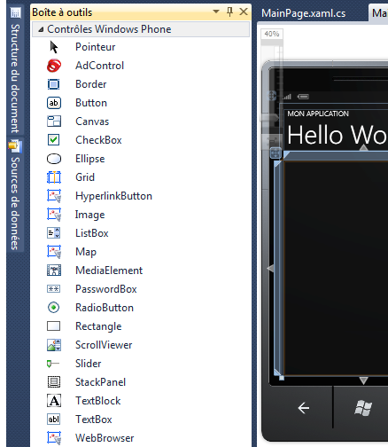
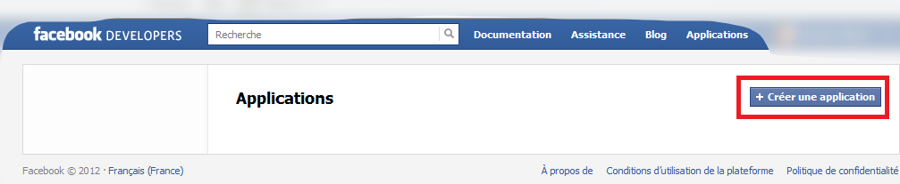
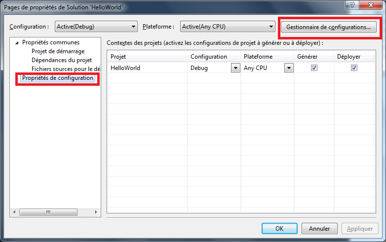
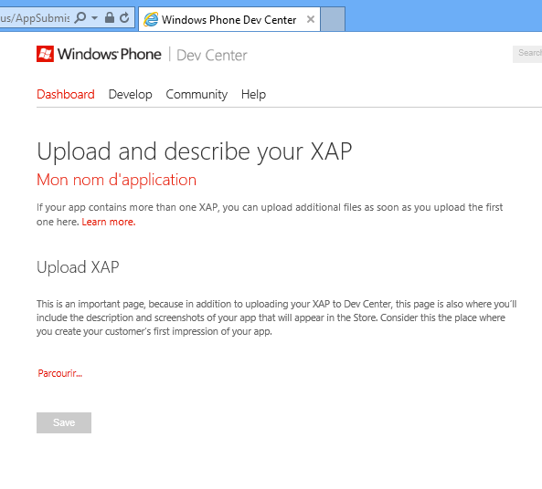

La révolution de la mobilité est en marche. Plus besoin de présenter l’iPhone qui a su conquérir un grand nombre d’utilisateurs ; suivi de près par les téléphones Android… Microsoft se devait de monter dans le TGV de la mobilité ! Sont donc apparus, après ses deux grands concurrents, les téléphones Windows. Avec un peu plus de retard sur eux, Microsoft attaque ce marché avec un peu plus de maturité qu’Apple qui a foncé en tant que pionnier et nous propose son système d’exploitation : Windows Phone.
C’est une bonne nouvelle pour nous ! C’est aujourd’hui un nouveau marché qui s’ouvre à nous avec plein d’applications potentielles à réaliser grâce à nos talents de développeur. Si c’est pour ça que vous vous trouvez sur cette page, alors restez-y ! Dans ce tutoriel, nous allons apprendre à réaliser des applications pour Windows Phone 7.5. Enfin… plutôt « commencer à apprendre » car dans ce tutoriel nous n’allons pas pouvoir couvrir tous les recoins dont regorge cette plateforme de développement. Mais il vous offrira je l’espère un point d’entrée intéressant afin de vous lancer dans le monde merveilleux du développement pour Windows Phone.
Vous pouvez vous réjouir ! Nous allons pouvoir développer des applications pour Windows Phone grâce à notre langage préféré, le C#. Bonne nouvelle non ? Il est possible de réaliser deux grands types d’application Windows Phone :
des applications dites de gestion où on utilisera Silverlight pour Windows Phone
des jeux avec le framework XNA
Dans ce tutoriel, nous allons apprendre à développer des applications de gestion avec Silverlight pour Windows Phone. Vous ne connaissez pas Silverlight ? Ce n’est pas grave, nous allons l’introduire rapidement (mais sûrement) dans les prochains chapitres.
Alors, quel est le programme ?
Nous allons dans un premier temps découvrir quels sont les outils nécessaires pour pouvoir développer pour Windows Phone. Puis nous aurons un petit aperçu de Silverlight car c’est un élément indispensable pour développer pour Windows Phone. Si vous connaissez déjà Silverlight, alors c’est une très bonne chose ; vous allez pouvoir réutiliser beaucoup de vos connaissances. Sinon, ce petit aperçu vous sera très utile. Il ne remplace pas un cours complet sur le sujet, mais se veut être une introduction suffisante pour arriver à suivre le tutoriel. Ensuite nous étudierons, à travers des exemples plus concret, certains aspects du développement spécifique Windows Phone, comme l’utilisation de certains contrôles, la récupération d’informations sur internet, l’exploitation de la géolocalisation, la connexion avec Facebook … Enfin, le dernier chapitre expliquera ce qu’il faut savoir pour tester son application finale sur son téléphone et pour la soumettre dans le grand magasin des applications Windows Phone de Microsoft, appelée généralement Windows Phone Store et qui remplace l'ancien nom Marketplace.
Joli programme n’est-ce pas ? Vous êtes prêts, alors c’est parti ! ^^
Ça a l’air super ça, de pouvoir développer des applications pour les téléphones ! C’est très à la mode et ces mini-ordinateurs nous réservent plein de surprises. Voyons donc ce qu’il nous faut pour nous lancer dans le monde merveilleux du développement pour Windows Phone.
Dans ce tutoriel, nous allons apprendre à développer pour Windows Phone équipés de la version 7.5, c’est-à-dire la version appelée « Mango » qui est la dernière version à l’heure où j’écris ces lignes.
Voici les prérequis indispensables pour suivre ce tutoriel :
La première chose est de posséder Windows 7, Windows Vista SP2 ou Windows 8 qui sont pour l'instant les seules configurations supportées permettant de développer pour Windows Phone.
Il est également grandement conseillé de posséder une carte graphique compatible avec DirectX 10 afin de pouvoir utiliser correctement l’émulateur. Je reviendrai plus tard sur ce qu’est l’émulateur.
Bien sûr, vous aurez aussi intérêt à posséder un smartphone équipé de Windows Phone : il est primordial de tester son application sur un téléphone avant de songer à la rendre disponible sur le Windows Phone Store.
Enfin le dernier prérequis est de savoir parler le C#.
Pour résumer, il s’agit d’un langage orienté objet apparu en même temps que le framework .NET qui n’a cessé d’évoluer depuis 2001. Il permet d’utiliser les briques du framework .NET pour réaliser des applications de toutes sortes et notamment des applications pour Windows Phone. C’est le ciment et les outils qui permettent d’assembler les briques de nos applications.
Installer Visual Studio 2010 Express pour Windows Phone avec Mango
Puisqu’on est partis dans le bâtiment, il nous faut un chef de chantier qui va nous permettre d’orchestrer nos développements. C’est ce qu’on appelle l’IDE, pour Integrated Development Environment, ce qui signifie « Environnement de développement intégré ». La gamme de Microsoft est riche en outils professionnels de qualité pour le développement, notamment grâce à Visual Studio.
Pour apprendre et commencer à découvrir l'environnement de développement, Microsoft propose gratuitement Visual Studio dans sa version express. C’est une version allégée de l’environnement de développement qui permet de faire plein de choses, mais avec moins d'outils que dans les versions payantes. Rassurez-vous, ces versions gratuites sont très fournies et permettent de faire tout ce dont on a besoin pour apprendre à développer sur Windows Phone et suivre ce tutoriel !
Pour réaliser des applications d'envergure, il pourra cependant être judicieux d'investir dans l'outil complet et ainsi bénéficier de fonctionnalités complémentaires qui permettent d'améliorer, de faciliter et d'industrialiser les développements.
Pour développer pour Windows Phone gratuitement, nous allons avoir besoin de Microsoft Visual Studio Express 2010 pour Windows Phone. Pour le télécharger, rendez-vous sur http://create.msdn.com.
Donc, allons sur le site http://create.msdn.com ; attention tout est en anglais, mais ne vous inquiétez pas, je vais vous guider. Cliquez sur Windows Phone Dev Center :
Cliquez ensuite sur GET SDK qui va nous permettre de télécharger les outils gratuits :
On arrive sur une nouvelle page où il est indiqué que l’on doit télécharger le « Windows Phone SDK ». SDK signifie Software Development Kit que l’on peut traduire par : Kit de développement logiciel. Ce sont tous les outils dont on va avoir besoin pour développer dans une technologie particulière, ici en l’occurrence pour Windows Phone. Cliquez sur le bouton Download sous Download the SDK 7.1 :
À noter qu’on nous propose de télécharger le Windows Phone SDK 7.1 ou le Windows Phone SDK 7.11. Le SDK en version 7.1 permet de développer pour la version 7.5 de Windows Phone, c’est-à-dire pour Mango. Donc Mango correspond à la version 7.5 de Windows Phone et les outils pour développer pour Mango sont en version 7.1. Les chiffres se ressemblent, donc ne vous y trompez pas. :) Il est obligatoire d'installer la version 7.1 pour pouvoir développer pour Windows Phone 7.5, mais vous pouvez si vous le souhaitez installer ensuite la version 7.11 ; c'est d'ailleurs indispensable si vous êtes sous Windows 8. La version 7.11 apporte le support pour Windows 8 mais également la possibilité d'utiliser l'émulateur permettant de simuler des téléphones avec beaucoup de mémoire (512 Mo), ou peu de mémoire (256 Mo). Dans ce cours je vais installer uniquement la version 7.1, qui représentera la majorité des configurations des lecteurs. Si vous installez en plus la version 7.11, sachez qu'il n'y aura pas beaucoup de différence.
Une fois cliqué, le téléchargement de l’installeur commence. Il s’agit du fichier vm_web2.exe. Comme son nom et sa taille le suggèrent, il ne s’agit que d’un petit exécutable qui aura besoin de se connecter à internet pour télécharger tout ce dont il a besoin. Donc, démarrez le téléchargement et enchaînez tout de suite sur l’installation, tant que vous êtes connectés à internet. L’installation est plutôt classique et commence par l’acceptation du contrat de licence :
Choisissez ensuite d’installer les outils maintenant :
L’installation est plutôt longue, surtout sur un PC fraichement installé. J’espère que vous réussirez à contenir votre impatience :) :
Enfin, nous arrivons à la fin de l’installation, vous pouvez cliquer sur Exécuter le produit maintenant pour lancer la version express de Visual Studio pour Windows Phone :
Vous pouvez également démarrer Visual Studio Express 2010 pour Windows Phone à partir du Menu Démarrer. Si vous possédez une version payante de Visual Studio, vous pouvez à présent le lancer.
À son ouverture, vous pouvez constater que nous arrivons sur la page de démarrage :
Nous allons donc créer un nouveau projet en cliquant sur le lien (comme indiqué sur la capture d'écran), ou plus classiquement par le menu Fichier > Nouveau projet.
À ce moment-là, Visual Studio Express 2010 pour Windows Phone (que j’appellerai désormais Visual Studio pour économiser mes doigts et les touches de mon clavier :p ) nous ouvre sa page de choix du modèle du projet :
Nous allons choisir de créer une Application Windows Phone, qui est la version la plus basique du projet permettant de réaliser une application pour Windows Phone avec Silverlight. Remarquons que le choix du langage est possible entre Visual Basic et Visual C#. Nous choisissons évidemment le C# car c’est le langage que nous maîtrisons. J’en profite pour nommer mon projet « HelloWorld »… (ici, personne ne se doute quel type d’application nous allons faire très bientôt ^^ ).
Enfin, après avoir validé la création du projet, il nous demande la version à cibler :
Choisissez « 7.1 ». Attention, comme on l’a déjà vu, ici nous ciblons donc les versions de Windows Phone 7.5, c’est-à-dire avec Mango. C’est bien la version du SDK qui est en 7.1.
Visual Studio génère son projet, les fichiers qui le composent et s’ouvre sur la page suivante :
Nous allons revenir sur cet écran très bientôt. Ce qu’il est important de remarquer c’est que si nous démarrons l’application telle quelle, elle va se compiler et s’exécuter dans l’émulateur Windows Phone. Vous le voyez dans le petit encadré en haut de Visual Studio, c’est la cible du déploiement. Il est possible de déployer soit sur l’émulateur, soit directement sur un téléphone relié au poste de travail. Il ne reste plus qu’à réellement exécuter notre application…
Exécutons donc notre application en appuyant sur F5, ce qui nous permet de démarrer l’application en utilisant le débogueur. Nous constatons que l’émulateur se lance, il ressemble à un téléphone Windows Phone… On le reconnait d’un coup d’œil avec les trois boutons en bas du téléphone, la flèche (ou retour arrière), le bouton d’accès au menu et la loupe pour faire des recherches :
L’émulateur possède également des boutons en haut à droite qui permettent (de haut en bas) de :
Fermer l’émulateur
Minimiser l’émulateur
Faire pivoter de 90° vers la gauche l’émulateur
Faire pivoter de 90° vers la droite l’émulateur
Adapter à la résolution
Zoomer/dézoomer sur l’émulateur
Ouvrir les outils supplémentaires
Remarquons également que des chiffres s’affichent sur le côté droit de l’émulateur. Ce sont des informations sur les performances de l’application, nous n’en parlerons pas ici.
Enfin, vous pouvez fermer l’application en cliquant sur le bouton retour de l’émulateur (la flèche en bas à gauche). L’application se ferme et le débogueur s’arrête.
Revenons un peu sur cette page que nous a affiché Visual Studio. Nous pouvons voir que le côté gauche ressemble à l’émulateur et que le côté droit ressemble à un fichier XML. Vous ne connaissez pas les fichiers XML ? Si vous voulez en savoir plus, n’hésitez pas à faire un petit tour sur internet, c’est un format très utilisé dans l’informatique ! Pour faire court, le fichier XML est un langage de balise, un peu comme le HTML, où l’on décrit de l’information. Les balises sont des valeurs entourées de < et > qui décrivent la sémantique de la donnée. Par exemple :
<prenom>Nicolas</prenom>
La balise <prenom> est ce qu’on appelle une balise ouvrante, cela signifie que ce qui se trouve après (en l’occurrence la chaine « Nicolas ») fait partie de cette balise jusqu’à ce que l’on rencontre la balise fermante </prenom> qui est comme la balise ouvrante à l’exception du / précédant le nom de la balise.
Le XML est un fichier facile à lire par nous autres humains. On en déduit assez facilement que le fichier contient la chaine « Nicolas » et qu’il s’agit sémantiquement d’un prénom. Une balise peut contenir des attributs permettant de donner des informations sur la donnée. Les attributs sont entourés de guillemets " et " et font partie de la balise. Par exemple :
<client nom="Nicolas" age="30"></client>
Ici, la balise client possède un attribut « nom » ayant la valeur « Nicolas » et un attribut « age » ayant la valeur « 30 ». Encore une fois, c’est très facile à lire pour un humain. Il est possible que la balise n’ait pas de valeur, comme c’est le cas dans l’exemple ci-dessus. On peut dans ce cas-là remplacer la balise ouvrante et la balise fermante par cet équivalent :
<client nom="Nicolas" age="30"/>
Enfin, et nous allons terminer notre aperçu rapide du XML avec ce dernier point : il est important de noter que le XML peut imbriquer ses balises et qu’il ne peut posséder qu’un seul élément racine, ce qui nous permet d’avoir une hiérarchie de données. Par exemple nous pourrons avoir :
On voit tout de suite que le fichier décrit une liste de deux clients. Nous en avons un qui est un particulier, qui s’appelle Nicolas et qui a 30 ans alors que l’autre est un professionnel, prénommé Jérémie et qui a 40 ans.
À quoi cela nous sert-il ? À comprendre ce fameux fichier de droite. C’est le fichier XAML (prononcez « Zammel »). Le XAML est un langage qui permet de décrire des interfaces et en l’occurrence ici le code XAML (à droite dans Visual Studio) décrit l’interface que nous retrouvons à gauche. La partie gauche est la prévisualisation du rendu du code écrit dans la partie droite. On appelle la partie gauche le designer. En fait, le fichier XAML contient des balises qui décrivent ce qui doit s’afficher sur l’écran du téléphone. Nous allons y revenir.
Nous allons donc devoir apprendre un nouveau langage pour pouvoir créer des applications sur Windows Phone : le XAML. Ne vous inquiétez pas, il est assez facile à apprendre et des outils vont nous permettre de simplifier notre apprentissage. :)
Ok pour le XAML si tu dis que ce n’est pas trop compliqué, mais le C# dans tout ça ?
Eh bien il arrive dans le fichier du même nom que le fichier XAML et il est suffixé par .cs. Nous le retrouvons si nous cliquons sur le petit triangle à côté du fichier XAML qui permet de déplier les fichiers :
Il est juste en dessous, on l’appelle le code behind. Le code behind est le code C# qui est associé à l’écran qui va s’afficher à partir du code XAML. Il permet de gérer toute la logique associée au XAML. Si vous ouvrez ce fichier C#, vous pouvez voir quelques instructions déjà créées en même temps que le XAML. Nous allons également y revenir.
Afin de faciliter la réalisation de jolis écrans à destination du téléphone, nous pouvons modifier le XAML. C'est un point que nous verrons plus en détail un peu plus loin. Il est possible de le modifier directement à la main lorsqu’on connait la syntaxe, mais nous avons aussi à notre disposition un outil dédié au design qui le fait tout seul : Blend.
Microsoft Expression Blend est un outil professionnel de conception d'interfaces utilisateur de Microsoft. Une version gratuite pour Windows Phone a été installée en même temps que Visual Studio Express 2010 pour Windows Phone et permet de travailler sur le design de nos écrans XAML. Nous verrons comment il fonctionne mais nous ne nous attarderons pas trop sur son fonctionnement car il mériterait un tutoriel entier.
Ce qui est intéressant c’est qu’il est possible de travailler en même temps sur le même projet dans Visual Studio et dans Blend, les modifications se répercutant de l’un à l’autre. Faisons un clic droit sur le fichier XAML et choisissons de l’ouvrir dans Expression Blend :
Blend s’ouvre alors et affiche à nouveau le rendu de notre écran :
On peut voir également une grosse boîte à outils qui va nous permettre de styler notre application. Nous y reviendrons.
En résumé
Pour développer pour Windows Phone, nous avons besoin de Visual Studio et du kit de développement pour Windows Phone.
Il existe une version totalement gratuite de Visual Studio permettant de réaliser des applications sous Windows Phone.
Un émulateur accompagne Visual Studio pour tester ses applications en mode développement.
Blend est l’outil de design permettant de styler son application, dont une version gratuite est fournie avec le kit de développement pour Windows Phone.
Nous avons désormais tous les outils qu’il faut pour commencer à apprendre à réaliser des applications pour Windows Phone. Nous avons pu voir que ces outils fonctionnent et nous avons pu constater un début de résultat grâce à l’émulateur. Mais pour bien comprendre et assimiler toutes les notions, nous avons besoin de plus de concret, de manipuler des éléments et de voir qu’est-ce qui exactement agit sur quoi. Aussi, il est temps de voir comment réaliser une première application avec le classique « Hello World » ! ^^ Cette première application va nous servir de base pour commencer à découvrir ce qu’il faut pour réaliser des applications pour Windows Phone.
Revenons donc sur notre écran où nous avons le designer et le XAML. Positionnons-nous sur le code XAML et ajoutons des éléments sans trop comprendre ce que nous allons faire afin de réaliser notre « Hello World ». Nous reviendrons ensuite sur ce que nous avons fait pour expliquer le tout en détail.
Pour commencer, on va modifier la ligne suivante :
<TextBlock x:Name="PageTitle" Text="nom de la page" Margin="9,-7,0,0" Style="{StaticResource PhoneTextTitle1Style}"/>
au moment de taper : Click="", Visual Studio Express vous a proposé de générer un nouveau gestionnaire d’événement :
Vous pouvez le générer en appuyant sur Entrée, cela nous fera gagner du temps plus tard. Sinon, ce n’est pas grave. Vous pouvez constater que le designer s’est mis à jour pour faire apparaitre nos modifications :
Ouvrez maintenant le fichier de code behind et modifiez la méthode Button_Click pour avoir :
Nous pouvons dès à présent démarrer notre application en appuyant sur F5. L’émulateur se lance et nous voyons apparaître les nouvelles informations sur l’écran :
La souris va ici permettre de simuler le « toucher » avec le doigt lorsque nous cliquons. Cliquons donc dans la zone de texte et nous voyons apparaître un clavier virtuel à l’intérieur de notre application :
Ce clavier virtuel s’appelle le SIP (pour Soft Input Panel) et apparait automatiquement quand on en a besoin, notamment dans les zones de saisie. Saisissons une valeur dans la zone de texte et cliquons sur le bouton Valider. Nous voyons apparaître le résultat en rouge avec un magnifique message construit :
Et voilà, notre Hello World est terminé ! Chouette non ? :D Pour quitter l’application, le plus simple est de cliquer sur le bouton retour, l’application se termine et le débogueur de Visual Studio s’arrête.
Alors, taper des choses sans rien comprendre, ça va un moment… mais là, il est temps de savoir ce que nous avons fait ! :-°
Nous avons dans un premier temps fait des choses dans le XAML. Pour rappel, le XAML sert à décrire le contenu de ce que nous allons voir à l’écran. En fait, un fichier XAML correspond à une page. Une application peut être découpée en plusieurs pages, nous y reviendrons plus tard. Ce que nous avons vu sur l’émulateur est l’affichage de la page MainPage.
Donc, nous avons utilisé le XAML pour décrire le contenu de la page. Il est globalement assez explicite mais ce qu’il faut comprendre c’est que nous avons ajouté des contrôles du framework .NET dans la page. Un contrôle est une classe C# complète qui sait s’afficher, se positionner, traiter des événements de l’utilisateur (comme le clic sur le bouton), etc. Ces contrôles ont des propriétés et peuvent être ajoutés dans le XAML. Par exemple, prenons la ligne suivante :
Nous demandons d’ajouter dans la page le contrôle TextBlock et de positionner sa propriété Text à la chaine de caractères "Saisir votre nom". Ce contrôle sera aligné au centre. En fait, j’ai dit que nous l’ajoutions dans la page, mais pour être plus précis, nous l’ajoutons dans le contrôle StackPanel qui est lui-même contenu dans le contrôle Grid, qui est contenu dans la page. Nous verrons plus loin ce que sont ces contrôles.
Derrière, automatiquement, cette ligne de XAML entraîne la déclaration et l’instanciation d’un objet de type TextBlock avec les affectations de propriétés adéquates. Puis ce contrôle est ajouté dans le contrôle StackPanel. Tout ceci nous est masqué. Grâce au XAML nous avons simplement décrit l’interface de la page et c’est Visual Studio qui s’est occupé de le transformer en C#. Parfait ! :) Moins on en fait et mieux on se porte… et surtout il y a moins de risque d’erreurs.
Et c’est pareil pour tous les autres contrôles de la page, le TextBlock qui est une zone de texte non modifiable, le TextBox qui est une zone de texte modifiable déclenchant l’affichage du clavier virtuel, le bouton, etc.
Pour le bouton, nous avons une propriété Click. Il s’agit en fait d’un événement. Lorsque nous avons ajouté plus tôt un nouveau gestionnaire d’événement, en fait Visual Studio a associé la méthode Button_Click à l’événement de clic sur le bouton. Ce qui fait qu’à chaque fois que l’on clique sur ce bouton cette méthode est appelée.
Que fait cette méthode ?
resultat.Text = "Bonjour " + nom.Text;
Elle modifie la propriété Text de la variable resultat en concaténant la chaine "Bonjour " et la propriété Text de la variable nom. Mais … d’où sortent ces variables ? Nous n’avons jamais déclaré de variable resultat ou de variable nom ! C’est la conséquence de ce que j’ai commencé à vous expliquer. C’est Visual Studio qui dans notre dos crée des variables en C# du type des contrôles. En l’occurrence, ici il a créé une variable resultat du type TextBlock et une variable nom du type TextBox. Si vous avez été attentif, le nom de la variable correspond à la valeur de la propriété x:Name des contrôles :
À chaque fois que nous donnerons un nom à un contrôle, Visual Studio va générer une variable portant ce nom. Voilà pourquoi nous avons une variable nom et une variable resultat.
Et pour les contrôles qui n’ont pas de propriété x:Name ?
Il crée quand même les objets correspondant, mais ils n’ont pas de variables associées.
Vous l’aurez peut-être deviné, mais c’est pareil pour la page. La page est aussi un objet du framework .NET. Plus précisément, notre page est une classe générée qui dérive de l’objet PhoneApplicationPage. On peut s’en rendre compte dans le code behind de la page où Visual Studio a généré une classe partielle du même nom que le fichier XAML et qui dérive de PhoneApplicationPage :
public partial class MainPage : PhoneApplicationPage
{
// Constructeur
public MainPage()
{
InitializeComponent();
}
private void Button_Click(object sender, RoutedEventArgs e)
{
resultat.Text = "Bonjour " + nom.Text;
}
}
Pourquoi partielle ? Parce que la partie concernant l’interface graphique définie dans le XAML sera auto générée à la compilation et fusionnée avec le reste de la classe définie dans le code-behind. Nous avons donc une seule et même classe définie dans deux fichiers différents (le second étant caché de l’utilisateur et se nommant MainPage.xaml.g.i.cs).
Restons-en là sur ce mécanisme. Ce qu’il est important de retenir c’est qu’un contrôle déclaré en XAML est facilement accessible par une variable dans le code behind. Visual Studio nous masque toute la complexité de création de l’interface.
Lorsque nous avons parlé du contrôle TextBlock, nous avons dit qu’il faisait partie du contrôle StackPanel qui lui-même faisait partie du contrôle Grid. Ces deux contrôles sont en fait des conteneurs dont l’objectif est de regrouper des contrôles de différentes façons. Le StackPanel par exemple, comme son nom peut le suggérer, permet d’empiler les contrôles les uns à la suite des autres. Dans l’exemple suivant, les contrôles sont ajoutés les uns en-dessous des autres :
Où nous affichons un texte, un bouton et une image.
Notons au passage que Visual Studio et l’émulateur peuvent très facilement récupérer des contenus sur internet, sauf si vous utilisez un proxy. Le contrôle StackPanel peut aussi empiler les contrôles horizontalement. Pour cela, il suffit de changer la valeur d’une de ses propriétés :
Ici, nous avons changé l’orientation de l’empilement pour la mettre en horizontal. Ce qui donne :
Ce qui ne rend pas très bien ici… :lol: Pour l’améliorer, nous pouvons ajouter d’autres propriétés à nos contrôles, notamment les réduire en hauteur ou en largeur. Par exemple :
Ici, j’ai rajouté une hauteur pour le contrôle StackPanel ce qui fait que tous les sous-contrôles se sont adaptés à cette hauteur. Nous aurons donc :
Par défaut, le contrôle StackPanel essaie d’occuper le maximum de place disponible dans la grille dont il fait partie. Comme nous avons forcé la hauteur, le StackPanel va alors se centrer. Il est possible d’aligner le StackPanel en haut grâce à la propriété VerticalAlignment :
Voilà pour ce petit tour du StackPanel. Il existe d’autres conteneurs, voyons par exemple le ScrollViewer. Il nous sert à rendre accessible des contrôles qui pourraient être masqués par un écran trop petit. Prenons par exemple ce code XAML :
<ScrollViewer>
<StackPanel>
<TextBlock Text="Bonjour à tous 1" Margin="40" />
<TextBlock Text="Bonjour à tous 2" Margin="40" />
<TextBlock Text="Bonjour à tous 3" Margin="40" />
<TextBlock Text="Bonjour à tous 4" Margin="40" />
<TextBlock Text="Bonjour à tous 5" Margin="40" />
<TextBlock Text="Bonjour à tous 6" Margin="40" />
<TextBlock Text="Bonjour à tous 7" Margin="40" />
</StackPanel>
</ScrollViewer>
Nous créons 7 contrôles TextBlock, contenant une petite phrase, qui doivent se mettre les uns en-dessous des autres. Vous aurez deviné que la propriété Margin permet de définir une marge autour du contrôle, j’y reviendrai. Si nous regardons le designer, nous pouvons constater qu’il nous manque un TextBlock :
Vous vous en doutez, il s’affiche trop bas et nous ne pouvons pas le voir sur l’écran car il y a trop de choses. Le ScrollViewer va nous permettre de résoudre ce problème. Ce contrôle gère une espèce de défilement, comme lorsque nous avons un ascenseur dans nos pages web. Ce qui fait qu’il sera possible de naviguer de haut en bas sur notre émulateur en cliquant sur l’écran et en maintenant le clic tout en bougeant la souris de haut en bas :
Vous pouvez également vous amuser à faire défiler le ScrollViewer horizontalement, mais il vous faudra changer une propriété :
Parlons à présent du contrôle Grid. C’est un contrôle très utilisé qui va permettre de positionner d’autres contrôles dans une grille. Une grille peut être définie par des colonnes et des lignes. Il sera alors possible d’indiquer dans quelle colonne ou à quelle ligne se positionne un contrôle. Par exemple, avec le code suivant :
Je définis une grille composée de 3 lignes sur 3 colonnes. Dans chaque case je pose un TextBlock avec une valeur qui me simule un jeu de morpion. Ce qu’il est important de remarquer ici c’est que je définis le nombre de colonnes grâce à ColumnDefinition :
Il y a donc 3 colonnes et 3 lignes. Chaque colonne a une largeur d’un tiers de l’écran. Chaque ligne a une hauteur d’un tiers de l’écran. Je vais y revenir juste après. Pour indiquer qu’un contrôle est à la ligne 1 de la colonne 2, j’utiliserai les propriétés Grid.Row et Grid.Column avec les valeurs 1 et 2 (à noter qu’on commence à numéroter à partir de 0, classiquement). Ce qui donnera :
Pratique non ? ^^ Nous pouvons voir aussi que dans la définition d’une ligne, nous positionnons la propriété Height. C’est ici que nous indiquerons la hauteur de chaque ligne. C’est la même chose pour la largeur des colonnes, cela se fait avec la propriété Width sur chaque ColomnDefinition.
Ainsi, en utilisant l’étoile, nous avons dit que nous voulions que le XAML s’occupe de répartir toute la place disponible. Il y a trois étoiles, chaque ligne et colonne a donc un tiers de la place pour s’afficher. D’autres valeurs sont possibles. Il est par exemple possible de forcer la taille à une valeur précise. Par exemple, si je modifie l’exemple précédent pour avoir :
J’indiquerai ici que la première colonne aura une taille fixe de 100, la troisième une taille fixe de 50 et la deuxième prendra la taille restante. De la même façon, pour les lignes, la deuxième est forcée à 200 et les deux autres se répartiront la taille restante, à savoir la moitié chacune.
J’en profite pour vous rappeler qu’un téléphone a une résolution de 480 en largeur et de 800 en hauteur. Ainsi, la deuxième colonne aura une taille de 480 – 100 – 50 = 330. Ce qui donne une grille plutôt disgracieuse, mais étant donné que chaque contrôle est aligné au centre, cela ne se verra pas trop. Pour bien le mettre en valeur, il est possible de rajouter une propriété à la grille lui indiquant que nous souhaitons voir les lignes. Bien souvent, cette propriété ne servira qu’à des fins de débogages. Il suffit d’indiquer :
<Grid ShowGridLines="True">
Par contre, les lignes s’affichent uniquement dans l’émulateur car le designer montre déjà ce que ça donne. Nous aurons :
Il est bien sûr possible de faire en sorte qu’un contrôle s’étende sur plusieurs colonnes ou sur plusieurs lignes, à ce moment-là, on utilisera la propriété Grid.ColumnSpan ou Grid.RowSpan pour indiquer le nombre de colonnes ou lignes que l’on doit fusionner. Par exemple :
Avant de terminer sur les lignes et les colonnes, il est important de savoir qu’il existe une autre valeur pour définir la largeur ou la hauteur, à savoir la valeur Auto. Elle permet de dire que c’est la largeur ou la hauteur des contrôles qui vont définir la hauteur d’une ligne ou d’une colonne. Voilà pour ce petit tour de ce contrôle si pratique qu’est la grille.
Nous finirons notre aperçu des conteneurs avec le Canvas. Au contraire des autres conteneurs qui calculent eux même la position des contrôles, ici c’est le développeur qui indique l’emplacement d’un contrôle, de manière relative à la position du Canvas. De plus le Canvas ne calculera pas automatiquement sa hauteur et sa largeur en analysant ses enfants, contrairement aux autres conteneurs. Ainsi si on met dans un StackPanel un Canvas suivi d’un bouton, le bouton sera affiché par-dessus le Canvas, car ce dernier aura une hauteur de 0 bien qu’il possède des enfants. Ainsi, l’exemple suivant :
<Canvas>
<TextBlock Text="Je suis en bas à gauche" Canvas.Top="500" />
<TextBlock Text="Je suis en haut à droite" Canvas.Left="250" Canvas.Top="10"/>
</Canvas>
affichera :
Nous nous servons des propriétés Canvas.Top et Canvas.Left pour indiquer la position du contrôle relativement au Canvas.
C’est sans doute le conteneur qui permet le placement le plus simple à comprendre, par contre ce n’est pas forcément le plus efficace, surtout lorsque nous retournerons l’écran. J’en parlerai un peu plus loin. Remarquons qu’une page doit absolument commencer par avoir un conteneur comme contrôle racine de tous les autres contrôles. C’est ce que génère par défaut Visual Studio lorsqu’on crée une nouvelle page. Il y met en l’occurrence un contrôle Grid. Avant de terminer, je vais revenir rapidement sur les marges. Je les ai rapidement évoquées tout à l’heure. Pour mieux les comprendre, regardons cet exemple :
Jusqu’à présent nous avons vu peu de contrôles, la zone de texte non modifiable, la zone de saisie modifiable, le bouton… Il existe beaucoup de contrôles disponibles dans les bibliothèques de contrôles Silverlight pour Windows Phone. Ceux-ci sont facilement visibles grâce à la boite à outils que l’on retrouve à gauche de l’écran :

Grâce au designer, vous pouvez faire glisser un contrôle de la boîte à outils dans le rendu de la page. Celui-ci se positionnera automatiquement. Prenons par exemple le contrôle de case à cocher, CheckBox. Sélectionnez-le et faites le glisser sur le rendu de la page :
Le designer m’a automatiquement généré le code XAML correspondant :
Vous aurez sûrement des valeurs légèrement différentes, notamment au niveau de la propriété Margin. C’est d’ailleurs en utilisant ces valeurs que le designer a pu me positionner le contrôle dans la grille. Remarquons que si j’avais fait glisser un Canvas et ensuite la case à cocher dans ce Canvas, j’aurais plutôt eu du code comme le suivant :
Ici, il a utilisé la propriété Canvas.Top et Canvas.Left pour positionner la case à cocher.
Il est possible de modifier les propriétés de la case à cocher, par exemple son contenu, en allant dans la fenêtre de propriétés :
Ici, je change la valeur de la propriété Content. Je peux observer les modifications dans sur le rendu et dans le XAML. Remarquons que le designer est un outil utile pour créer son rendu, par contre il ne remplace pas une bonne connaissance du XAML afin de gérer correctement le positionnement. J’aurais aussi pu faire la même chose dans Expression Blend qui est l’outil de design professionnel. J’ai également accès à la boîte à outils :
Et de la même façon, je peux faire glisser un contrôle, disons le Slider, sur ma page. J’ai également accès à ses propriétés afin de les modifier. Ici, par exemple, je modifie la couleur du Slider :
Nous reviendrons sur Blend un peu plus tard.
Avant de terminer, nous allons reparler du contrôle Image. Nous l’avons rapidement utilisé en montrant qu’il était très simple d’afficher une image présente sur internet simplement en indiquant l’url de celle-ci. Il est également très facile d’afficher des images à nous, embarquées dans l’application. Pour cela, j’utilise une petite image toute bête, représentant un cercle rouge :
Ajoutons donc cette image à la solution. Pour cela, je vais commencer par créer un nouveau répertoire Images, puis ajouter un élément existant en faisant un clic droit sur le projet. Je sélectionne l’image qui s’ajoute automatiquement à la solution. Ici, il faut faire attention à ce que dans les propriétés de l’image, l’action de génération soit à Contenu, et non pas à Ressource, qui est le paramètre par défaut :
Nous pourrons alors très simplement afficher l’image en se basant sur l’url relative de l’image dans la solution :
Et chargeons l’image dans le code de cette façon :
monImage.Source = new BitmapImage(new Uri("/Images/rond.png", UriKind.Relative));
Cela semble moins pratique, mais je vous l’ai présenté car nous utiliserons cette méthode un petit peu plus loin. D’une manière générale, il sera toujours plus pertinent de passer par le XAML que par le code !
Nous avons vu qu’on pouvait modifier les couleurs, la taille de l’écriture… grâce à la fenêtre des propriétés d’un contrôle. Cela modifie les propriétés des contrôles et affecte leur rendu. C’est très bien. Mais imaginons que nous voulions changer les couleurs et l'écriture de plusieurs contrôles, il va falloir reproduire ceci sur tous les contrôles, ce qui d’un coup est plutôt moins bien ! :( C’est là qu’intervient le style. Il correspond à l’identification de plusieurs propriétés par un nom, que l’on peut appliquer facilement à plusieurs contrôles.
Si nous passons dans Blend, nous pouvons facilement créer un style en faisant un clic droit sur un TextBlock et en choisissant de modifier le style, puis de créer un nouveau style en choisissant de créer un élément vide :
Blend nous ouvre une nouvelle fenêtre où nous pouvons créer un nouveau style :
Nous devons fournir un nom au style puis nous pouvons indiquer quelle est la portée du style, soit toute l’application (ce que j’ai choisi), soit la page courante, soit un dictionnaire de ressources.
Le style est créé dans le fichier App.xaml qui est le fichier de lancement de l’application. Je peux aller modifier les propriétés du style :
Une fois le style terminé, je peux retourner dans ma page pour appliquer ce style aux autres contrôles. Pour cela, j’utilise le bouton droit sur le contrôle, Modifier le style > Appliquer la ressource, et je peux retrouver mon style tout en haut :
On remarque au passage qu’il existe plein de styles déjà tout prêts dont nous pouvons allégrement nous servir ! :D
De retour dans le XAML, je peux constater qu’une propriété a été rajoutée à mes TextBlock :
Ce qui correspond aux valeurs que j’ai modifiées. Et voilà, plutôt simple non ?
Alors, qu’y-a-t ’il derrière ces styles ? La première chose que l’on peut voir c’est la syntaxe particulière à l’intérieur de la propriété Style :
Style="{StaticResource TexteStyle}"
Des accolades avec le mot-clé StaticResource… Cela signifie qu’à l’exécution de l’application, le moteur va aller chercher le style associé au nom TexteStyle. Il commence par le chercher dans les ressources de la page, comme il n’en trouve pas ici vu que nous avons mis les ressources au niveau de l’application, il va aller les chercher dans le dictionnaire de ressources de l’application.
En fait, le dictionnaire de ressources, c’est simplement une collection d’objets associés à un nom, utilisables partout dans l’application.
On voit également que le style est défini pour s’appliquer au TextBlock, grâce à la propriété TargetType="TextBlock".
La ListBox est un élément incontournable dans la création d’applications pour Windows Phone. Elle permet un puissant affichage d’une liste d’élément. Voyons tout de suite de quoi il s’agit.
Utilisons notre designer préféré pour rajouter une ListBox dans notre page et nommons-là listeDesTaches, ce qui donne le XAML suivant :
<ListBox x:Name="listeDesTaches">
</ListBox>
Pour affecter une liste d’éléments à une ListBox, on peut passer par le code behind. Il suffit d’alimenter la propriété ItemSource avec un objet implémentant IEnumerable, par exemple une liste :
public MainPage()
{
InitializeComponent();
List<string> chosesAFaire = new List<string>
{
"Arroser les plantes",
"Tondre le gazon",
"Planter les tomates"
};
listeDesTaches.ItemsSource = chosesAFaire;
}
Il ne reste plus qu’à démarrer l’application. Nous pouvons voir que la ListBox s’est automatiquement remplie avec nos valeurs :
Et ceci sans rien faire de plus. Ce qu’il est important de remarquer, c’est que si nous ajoutons beaucoup d’éléments à notre liste, alors celle-ci gère automatiquement un ascenseur pour pouvoir faire défiler la liste. La ListBox est donc une espèce de ScrollViewer qui contient une liste d’éléments dans un StackPanel. Tout ceci est géré nativement par la ListBox. Elle gère également un autre point intéressant, à savoir la sélection d’un élément, grâce à un événement. Modifions le XAML pour avoir :
Remarquons au passage que si l’emplacement dans la grille n’est pas précisé, alors il prend la valeur 0, c’est pour cela que j’ai précisé que le Grid.Row="1" sur la ligne pour le TextBlock. Notre grille a donc deux lignes, la première contenant la ListBox et la seconde un TextBlock. Remarquons l’événement SelectionChanged qui est associé à la méthode listeDesTaches_SelectionChanged. Dans le code behind, nous aurons :
Ce qui va nous permettre d’afficher dans le TextBlock la valeur de ce que nous avons choisi :
Nous voyons au passage que la sélection est mise en valeur automatiquement dans la ListBox. Très bien tout ça. :) Nous avons quand même rencontré un petit problème. Dans le XAML, nous avons mis la ListBox, mais la liste est vide, rien ne s’affiche dans le designer. Ce qui n’est pas très pratique pour créer notre page. C’est logique car l’alimentation de la ListBox est faite dans le constructeur, c’est-à-dire lorsque nous démarrons notre application. Nous verrons plus loin comment y remédier. L’autre souci, c’est que si vous essayez de mettre des choses un peu plus complexes qu’une chaine de caractère dans la ListBox, par exemple un objet :
public class ElementAFaire
{
public int Priorite { get; set; }
public string Description { get; set; }
}
[…]
public MainPage()
{
InitializeComponent();
List<ElementAFaire> chosesAFaire = new List<ElementAFaire>
{
new ElementAFaire { Priorite = 1, Description = "Arroser les plantes"},
new ElementAFaire { Priorite = 2, Description = "Tondre le gazon"},
new ElementAFaire { Priorite = 1, Description = "Planter les tomates"},
new ElementAFaire { Priorite = 3, Description = "Laver la voiture"},
};
listeDesTaches.ItemsSource = chosesAFaire.OrderBy(e => e.Priorite);
}
vous aurez l’affichage suivant :
La ListBox affiche la représentation de l’objet, c’est-à-dire le résultat de sa méthode ToString(). Vous me direz, il suffit de surcharger la méthode ToString() avec quelque chose comme ça :
public class ElementAFaire
{
public int Priorite { get; set; }
public string Description { get; set; }
public override string ToString()
{
return Priorite + " - " + Description;
}
}
Et l’affaire est réglée ! Et je vous répondrai oui, parfait. Sauf que cela ne fonctionne que parce que nous affichons du texte ! Et si nous devions afficher du texte et une image ? Ou du texte et un bouton ? C’est là qu’interviennent les modèles, plus couramment appelés en anglais : template. Ils permettent de personnaliser le rendu de son contrôle. Le contrôle garde toute sa logique mais peut nous confier le soin de gérer l’affichage, si nous le souhaitons. C’est justement ce que nous voulons faire. Nous allons donc redéfinir l’affichage de chaque élément de la liste. Pour cela, plutôt que d’afficher un simple texte, nous allons en profiter pour afficher une image pour la priorité et le texte de la description. Si la priorité est égale à 1, alors nous afficherons un rond rouge, sinon un rond vert :
La première chose à faire est de définir le modèle des éléments de la ListBox. Cela se fait avec le code suivant :
On redéfinit la propriété ItemTemplate, c’est-à-dire le modèle d’un élément de la liste. Puis à l’intérieur de la balise DataTemplate, on peut rajouter nos propres contrôles. Ici, il y a un conteneur, le StackPanel, qui contient une image et une zone de texte en lecture seule. Le DataTemplate doit toujours contenir un seul contrôle. Vu que vous avez l’œil, vous avez remarqué des extensions de balisage XAML à l’intérieur du contrôle Image et du contrôle TextBlock. Je vais y revenir.
En attendant, nous allons modifier légèrement le code behind de cette façon :
public MainPage()
{
InitializeComponent();
List<ElementAFaire> chosesAFaire = new List<ElementAFaire>
{
new ElementAFaire { Priorite = 1, Description = "Arroser les plantes"},
new ElementAFaire { Priorite = 2, Description = "Tondre le gazon"},
new ElementAFaire { Priorite = 1, Description = "Planter les tomates"},
new ElementAFaire { Priorite = 3, Description = "Laver la voiture"},
};
listeDesTaches.ItemsSource = chosesAFaire.OrderBy(e => e.Priorite).Select(e => new ElementAFaireBinding { Description = e.Description, Image = ObtientImage(e.Priorite) });
}
private BitmapImage ObtientImage(int priorite)
{
if (priorite <= 1)
return new BitmapImage(new Uri("/Images/vert.png", UriKind.Relative));
return new BitmapImage(new Uri("/Images/rouge.png", UriKind.Relative));
}
Nous aurons besoin de la nouvelle classe suivante :
public class ElementAFaireBinding
{
public BitmapImage Image { get; set; }
public string Description { get; set; }
}
Le principe est de construire des éléments énumérables à partir de notre liste. Il s’agit d’y mettre un nouvel objet qui possède une propriété Description et une propriété Image qui contient un objet BitmapImage construit à partir de la valeur de la priorité de la tâche. Il est important de constater que la classe contient des propriétés qui ont les mêmes noms que ce qu'on a écrit dans l’extension de balisage vue plus haut.
J’y reviendrai plus tard, mais nous avons ici fait ce qu’on appelle un binding, que l’on peut traduire par une liaison de données. Nous indiquons que nous souhaitons mettre la valeur de la propriété Image de l’élément courant dans la propriété Source de l’image et la valeur de la propriété Description de l’élément courant dans la propriété Text du TextBlock. Rappelez-vous, l’élément courant est justement un objet spécial qui contient ces propriétés.
Si nous exécutons le code, nous obtenons :
Magique. :) Le seul défaut viendrait de mes images qui ne sont pas transparentes… Remarquons qu’il est obligatoire de créer une nouvelle classe contenant les propriétés Description et Image. Il n’aurait pas été possible d’utiliser un type anonyme car le type anonyme n’est pas public mais internal. Dans ce cas, il aurait fallu rajouter une instruction particulière permettant de dire que les classes qui font la liaison de données ont le droit de voir les classes internes. Ce qui est beaucoup plus compliqué que ce que nous avons fait ! :p
Voilà pour ce petit tour rapide de la ListBox. Sachez qu’il existe beaucoup de contrôles qui utilisent ce même modèle, nous aurons l’occasion d’en voir d’autres. C’est une fonctionnalité très puissante qui nous laisse beaucoup de contrôle sur le rendu de nos données.
C’est terminé pour cette petite introduction à Silverlight. Je ne suis pas rentré beaucoup dans les détails, j’espère que vous me pardonnerez. Mais vous aviez besoin au moins d’un petit support pour commencer si jamais vous ne connaissiez pas le XAML. C’est désormais chose faite et vous devriez être capables de suivre la suite du tutoriel et de commencer à réaliser des applications pour Windows Phone.
En résumé
Le XAML est le langage qui permet de décrire l’apparence des pages de notre application.
Une page est composée de contrôles, comme une zone de texte, un bouton, etc.
Il est possible de modifier l’apparence de ces contrôles grâce au style.
La ListBox est un contrôle très puissant qui offre un grand contrôle sur le rendu de ses éléments grâce au système de modèle.
Pour l’instant, notre application est simple, avec une unique page. Il est bien rare qu’une application n’ait qu’une seule page… C’est comme pour un site internet, imaginons que nous réalisions une application mobile pour commander des produits, nous aurons une page contenant la liste des produits par rayon, une page pour afficher la description d’un produit, une page pour commander…
Nous allons donc voir qu’il est possible de naviguer facilement entre les pages de notre application grâce au service de navigation de Silverlight pour Windows Phone.
Avant de pouvoir naviguer entre des multiples pages, il faut effectivement avoir plusieurs pages ! Nous allons illustrer cette navigation en prenant pour exemple le Site du Zéro … enfin, en moins bien. ^^ Sur la première page, nous aurons un menu qui nous permet d’aller voir la liste des tutoriels ou la liste des MP. La page qui contient la liste des tutoriels permettra de naviguer sur un tutoriel précis et d’en voir le contenu. La page des MP indiquera qu’elle est en chantier.
Commençons par le menu et vu qu’elle existe, utilisons la page MainPage.xaml :
J’ai juste modifié la page en changeant le titre, et rajouté deux contrôles HyperLinkButton qui vont nous permettre de naviguer sur d’autres pages. Si nous affichons la page dans l’émulateur, nous avons :
Dans le XAML, on peut voir ici qu'il est très simple de faire un lien vers d'autres pages en utilisant l'attribut NavigateUri de l'HyperlinkButton. Il suffit d'indiquer l'emplacement d'une page XAML. Nous allons devoir créer deux pages, ListeTutoriels.xaml et ListeMps.xaml. Pour cela, nous faisons un clic droit sur le projet et choisissons d’ajouter un nouvel élément. Il suffit de choisir le modèle de fichier « Page en mode portrait Windows Phone » et de lui donner le bon nom :
Reste à modifier les pages pour qu’on les reconnaisse, ListeTutoriels.xaml ressemblera à :
Remarquons qu’on utilise une ListBox avec un modèle contenant un contrôle Border qui sert à encadrer le TextBlock. Notons également une propriété du TextBlock qui permet de revenir à la ligne, avec TextWrapping à Wrap.
Quant à la page ListeMps.xaml, elle aura le code suivant :
<Grid x:Name="LayoutRoot" Background="Transparent">
<Grid.RowDefinitions>
<RowDefinition Height="Auto"/>
<RowDefinition Height="*"/>
</Grid.RowDefinitions>
<StackPanel x:Name="TitlePanel" Grid.Row="0" Margin="12,17,0,28">
<TextBlock x:Name="ApplicationTitle" Text="L'appli du Site du zéro" Style="{StaticResource PhoneTextNormalStyle}"/>
<TextBlock x:Name="PageTitle" Text="Les MP" Margin="9,-7,0,0" Style="{StaticResource PhoneTextTitle1Style}"/>
</StackPanel>
<Grid x:Name="ContentPanel" Grid.Row="1" Margin="12,0,12,0">
<TextBlock Text="Page en construction ..." />
</Grid>
</Grid>
où on affiche simplement que la page est en construction.
Il nous manque encore une page de visualisation du tutoriel, appelons-là Tuto.xaml. Elle contiendra le XAML suivant :
Il s’agit d’une grille contenant un TextBlock où nous mettrons le contenu du tutoriel et un bouton pour revenir en arrière. Évidemment, ici nous n’allons pas afficher un tutoriel dans un simple TextBlock, aussi nous mettrons juste une petite phrase pour illustrer le propos.
Si on démarre l’application et qu’on clique sur « Voir les tutoriels », on peut constater qu’on change de page. Tout à fait naturellement, lorsque l'on souhaite revenir à la page précédente, on peut cliquer sur le bouton de retour arrière du téléphone, nous y reviendrons. De la même façon, si on clique sur « Voir mes MP », on remarque à nouveau un changement de page avec retour arrière possible en cliquant sur le bouton de retour arrière de l’émulateur.
Et voilà, nous naviguons entre les pages de notre application en n'ayant presque rien fait, à part ajouter un contrôle HyperlinkButton. Il sait gérer facilement une navigation avec des liens entre des pages. C’est la forme de navigation la plus simple.
Continuons l’application pour découvrir les autres formes de navigation. Il faut remplir la liste des tutoriels, pour cela nous alors créer une liste d’articles :
public class Article
{
public string Nom { get; set; }
public DateTime DatePublication { get; set; }
public string Contenu { get; set; }
}
public static class Articles
{
public static List<Article> GetArticles()
{
List<Article> articles = new List<Article>();
articles.Add(new Article
{
Nom = "Concevez votre site web avec PHP et MySQL",
DatePublication = new DateTime(2010, 11, 15),
Contenu = "Blogs, réseaux sociaux, pages d'accueil personnalisables... Depuis quelques années, les sites web ont gagné en fonctionnalités et sont devenus dans le même temps de plus en plus complexes.\nQue le temps de la \"page web perso\" est loin ! Il y a une époque où l'on pouvait se contenter de créer un site basique. Un peu de texte, quelques images : hop là, notre site perso était prêt ..."
});
articles.Add(new Article
{
Nom = "Apprenez à développer en C#",
DatePublication = new DateTime(2010, 11, 20),
Contenu = "Vous avez entendu parler du langage C, du C++, et voilà qu'on vous présente maintenant le C# ! Encore un langage me direz-vous ? Oui, mais pas n'importe lequel !\nIl existe beaucoup de langages de programmation, comme le C, le C++, Python, Java... Chacun a ses avantages, ses inconvénients et ses domaines d'applications..."
});
articles.Add(new Article
{
Nom = "Apprendre à développer pour Windows Phone",
DatePublication = new DateTime(2012, 12, 5),
Contenu = "En cours de rédaction ..."
});
return articles;
}
}
public ListeTutoriels()
{
InitializeComponent();
listeTutoriels.ItemsSource = Articles.GetArticles();
}
Nous obtenons :
Nous avons désormais notre ListBox remplie avec des tutoriels. Il faut désormais écrire l’événement de sélection d’un élément afin de pouvoir naviguer sur la page de prévisualisation d’un tutoriel :
Nous récupérons dans un premier temps l’élément sélectionné grâce à la propriété SelectedItem de la ListBox (il aurait également été disponible dans le deuxième paramètre de la méthode). Juste après, nous stockons l’article dans le dictionnaire d’état de l’application. Il s’agit d’un endroit où on va pouvoir stocker plein de choses qui vont nous servir tout au long de l’application. Ici, j’associe une chaine de caractère à l’objet représentant l’article courant. Je pourrai m’en servir plus tard.
Nous découvrons également la classe NavigationService. De la même façon que le contrôle HyperlinkButton, elle permet de naviguer entre les pages par code, avec notamment sa méthode Navigate(). Il suffit de lui indiquer l’url de la page XAML à afficher.
Comme vous l'aurez compris, nous utilisons le dictionnaire d'état de l'application pour communiquer un contexte à la page vers laquelle nous allons naviguer. C'est une solution, sachant qu'il y en a d'autres dont une que nous allons explorer plus loin.
Désormais, après le clic sur un tutoriel, nous pouvons constater que nous naviguons correctement sur la page de visualisation du tutoriel. C’est le moment de récupérer les informations de contexte et de les afficher. Cela pourrait être fait dans le constructeur de la page, mais en fait il y a un meilleur moment pour le faire. Il s'agit de la méthode qui est appelée lorsqu’on navigue sur une page, à savoir la méthode OnNavigatedTo. Il suffit de la substituer pour pouvoir récupérer nos informations sur l’article en cours, cette méthode faisant partie de la classe PhoneApplicationPage, nous la substituons directement dans notre code behind de la page Tuto.xaml.cs :
Et voilà, maintenant, lorsque nous cliquons sur un élément de la ListBox, nous pouvons voir son contenu dans la nouvelle page :
Nous avons donc utilisé le dictionnaire d’état pour faire transiter de l’information entre les pages. Il y a d’autres solutions pour le faire. Une autre est d’utiliser la query string. Il s’agit d’informations complémentaires passées à la page. Pour illustrer ce fonctionnement, nous allons simplement modifier la méthode associée à l’événement de sélection d’un élément dans la ListBox :
Ici, on utilise la query string pour passer la valeur de l'index de l'élément sélectionné. C’est comme pour une page web, on utilise le point d’interrogation suivi d’une clé et de sa valeur.
Il faut maintenant modifier la page Tuto.xaml pour récupérer cet index :
protected override void OnNavigatedTo(System.Windows.Navigation.NavigationEventArgs e)
{
string indexStr;
if (NavigationContext.QueryString.TryGetValue("index", out indexStr))
{
int index = int.Parse(indexStr);
Article currentArticle = Articles.GetArticles()[index];
PageTitle.Text = currentArticle.Nom;
contenu.Text = currentArticle.Contenu;
}
base.OnNavigatedTo(e);
}
Ici on utilise le contexte de navigation (NavigationContext) pour récupérer la valeur que nous avons transmise dans la query string. Une fois cette valeur récupérée, il ne reste plus qu'à accéder à l'élément de la liste à l'index adéquat et nous pouvons afficher notre contenu.
Nous avons pu voir ainsi deux façons différentes de naviguer entre les pages, via le contrôle HyperlinkButton et via le NavigationService. Puis nous avons vu deux façons différentes de passer des informations entre les pages, via la query string et via le dictionnaire d'état de l'application.
Si on veut démarrer sur une autre page, il faut modifier la valeur de :
<DefaultTask Name ="_default" NavigationPage="MainPage.xaml"/>
Et pour revenir en arrière ? Nous l’avons vu, il faut cliquer sur le bouton de retour arrière qui fait nécessairement partie d’un téléphone Windows Phone. Mais il est également possible de déclencher ce retour arrière grâce au service de navigation. C’est à cela que va servir le bouton que j’ai rajouté en bas de la page Tuto.xaml. Observons l’événement associé au clic :
Très simple, il suffit de déclencher le retour arrière avec la méthode GoBack() du service de navigation. Notez qu’il peut être utile dans certaines situations de tester si un retour arrière est effectivement possible. Cela se fait avec la propriété CanGoBack :
Il est également possible de savoir si l’utilisateur a appuyé sur le fameux bouton de retour arrière. À ce moment-là, on passera dans la méthode OnBackKeyPress. Pour pouvoir faire quelque chose lors de ce clic, on pourra substituer cette méthode dans notre classe :
Il est possible ici de faire ce que l’on veut, comme afficher un message de confirmation demandant si on veut réellement quitter cette page, ou sauvegarder des infos, etc. On pourra annuler l’action de retour arrière en modifiant la propriété Cancel de l’objet CancelEventArgs à true. On peut également choisir de rediriger vers une autre page si c’est pertinent. Et voilà pour les bases de la navigation. D’une manière générale, il est de bon ton de garder une mécanique de navigation fluide et cohérente. Il faut privilégier la navigation intuitive pour que l’utilisateur ne soit pas perdu dans un labyrinthe d’écran…
Naviguer entre les pages, c’est bien mais nous pouvons également naviguer entre les données. C’est là qu’interviennent deux contrôles très utiles qui permettent de naviguer naturellement entre des données : le contrôle Panorama et le contrôle Pivot. Le contrôle Panorama sert en général à voir un petit bout d’un plus gros écran, qui ne rentre pas dans l’écran du téléphone. On met beaucoup d’infos sur une grosse page et la mécanique du contrôle Panorama incite à se déplacer avec le doigt sur le reste du plus gros écran. On l’illustre souvent avec une image de ce genre :
Le contrôle panorama affiche donc plusieurs données sur une seule grosse page.
Le contrôle Pivot quant à lui permet plutôt de voir plusieurs éléments d'une même source de données sur plusieurs pages. La navigation entre les pages se fait en faisant glisser le doigt, comme si l’on tournait une page. Par exemple pour une application météo, la première page permet d’afficher la météo du jour, la page suivante permet d’afficher la météo de demain, etc.
Découvrons à présent rapidement ces deux contrôles. Le plus simple pour commencer est de créer un nouveau projet. Vous avez sûrement constaté que Visual Studio nous proposait de créer différents modèles de projet, dont un projet s’appelant « Application Panorama Windows Phone » et un autre s’appelant « Application Pivot Windows Phone ». Choisissons le projet « Application Panorama Windows Phone » :
Si nous démarrons immédiatement l’application, nous pouvons voir qu’elle contient un panorama existant. Chouette. Le souci c’est que la traduction en français du modèle n’est pas terrible, mais bon, on fera avec.
Ce qu’il faut remarquer ici, c’est qu’il est possible de faire glisser l’écran en cours de gauche à droite, affichant deux éléments en boucle :
Il faut également remarquer que l’affichage du premier écran incite l’utilisateur à aller voir ce qu’il y a à droite. En effet, on peut voir que le titre n’est pas complet, qu’il y a un « s » qui traine à droite indiquant le début d’un titre suivant. Pareil pour le carré rouge, on se doute qu’il doit y avoir quelque chose à côté... Bref, tout est fait pour donner envie d’aller voir ce qu’il y a plus loin. C’est le principe du panorama.
Voyons à présent le XAML qui a été généré pour obtenir cet écran :
<controls:Panorama Title="mon application">
<controls:Panorama.Background>
<ImageBrush ImageSource="PanoramaBackground.png"/>
</controls:Panorama.Background>
<!--Élément un de panorama-->
<controls:PanoramaItem Header="premier élément">
<!--Liste double trait avec habillage du texte-->
<ListBox Margin="0,0,-12,0" ItemsSource="{Binding Items}">
[code supprimé pour plus de lisibilité]
</ListBox>
</controls:PanoramaItem>
<!--Élément deux de panorama-->
<!--Utilisez 'Orientation="Horizontal"' pour activer un panneau qui s'affiche horizontalement-->
<controls:PanoramaItem Header="second élément">
<!--Liste double trait avec espace réservé pour une image et habillage du texte-->
<ListBox Margin="0,0,-12,0" ItemsSource="{Binding Items}">
[code supprimé pour plus de lisibilité]
</ListBox>
</controls:PanoramaItem>
</controls:Panorama>
Ce qu’on peut constater déjà, c’est qu’il est composé de deux parties qui sont toutes les deux des PanoramaItem. Un PanoramaItem correspond donc à une « vue » de la totalité du Panorama. La navigation se passe entre ces deux éléments. Chaque élément du panorama a un titre, représenté par la propriété Header. Dans le deuxième, on peut remarquer que le titre commence par le fameux « s » qui dépasse du premier élément. Tout ceci est fait automatiquement sans que l’on ait à faire quoi que ce soit de supplémentaire. :)
Nous pouvons créer autant de PanoramaItem que nous le souhaitons, et mettre ce que nous voulons dedans. Ici, il a été mis des listes, mais cela pourrait être n’importe quoi d’autre vu que le Panorama fait office de conteneur. Je vais m’arrêter là pour cette présentation, mais vous vous doutez bien qu’on peut faire beaucoup de choses avec ce panorama, comme s’abonner à l’événement de changement de PanoramaItem, ou se positionner directement sur un élément précis du panorama, etc.
Voyons à présent le contrôle Pivot qui est un autre contrôle bien utile. Pour cela, créez le deuxième type de projet que nous avons vu, à savoir « Application Pivot Windows Phone » et démarrons l’application exemple. On constate qu’on peut également naviguer en faisant glisser la page sur la droite ou sur la gauche avec le doigt (ou la souris :p ):
Ici, il y a seulement le titre des pages qui nous renseigne sur la présence d’un autre élément. Voyons à présent le code XAML :
<controls:Pivot Title="MON APPLICATION">
<!--Élément un de tableau croisé dynamique-->
<controls:PivotItem Header="premier">
<!--Liste double trait avec habillage du texte-->
<ListBox x:Name="FirstListBox" Margin="0,0,-12,0" ItemsSource="{Binding Items}">
[code supprimé pour plus de lisibilité]
</ListBox>
</controls:PivotItem>
<!--Élément deux de tableau croisé dynamique-->
<controls:PivotItem Header="second">
<!--Liste triple trait, aucun habillage du texte-->
<ListBox x:Name="SecondListBox" Margin="0,0,-12,0" ItemsSource="{Binding Items}">
[code supprimé pour plus de lisibilité]
</ListBox>
</controls:PivotItem>
</controls:Pivot>
Ici, le principe est le même. Le contrôle Pivot est décomposé en deux PivotItem, chacun faisant office de container. Dedans il y a une ListBox mais tout autre contrôle y trouve sa place. Encore une fois, c’est la propriété Header qui va permettre de donner un titre à la page.
Vous pourriez trouver que les deux contrôles se ressemblent, et ce n’est pas complètement faux. Je vous rappelle juste que le contrôle Panorama permet d’afficher plusieurs données sur une seule grosse page alors que le contrôle Pivot est utilisé pour présenter la même donnée sur plusieurs pages. Vous appréhenderez au fur et à mesure la subtile différence entre ces deux contrôles. ^^ Remarquons avant de terminer que ces deux contrôles fonctionnent parfaitement avec le binding que nous découvrirons plus loin.
Je n’en ai pas encore parlé, mais un téléphone ne se tient pas toujours droit devant nous, les boutons en bas (ce qu’on appelle le mode portrait). Il peut se tenir horizontalement, en mode paysage. Suivant les cas, les applications sont figées et ne peuvent se tenir que dans un sens. Dans d’autres cas, elles offrent la possibilité de tenir son téléphone dans plusieurs modes, révélant au passage une interface légèrement différente. Si on tient le téléphone en mode paysage, il y a plus de place en largeur, il peut être pertinent d’afficher plus d’informations…
Un téléphone Windows Phone sait détecter quand il change d’orientation. Il est capable de lever un événement nous permettant de réagir à ce changement d’orientation… mais n’anticipons pas et revenons à la base, la page. Si nous regardons en haut dans les propriétés de la page, nous pouvons voir que nous avons régulièrement créé des pages qui possèdent ces propriétés :
Cela indique que l’application supporte le mode portrait et que la page démarre en mode portrait. Il est possible de changer les valeurs de ces propriétés. On peut par exemple affecter les valeurs suivantes à la propriété SupportedOrientation :
Portrait
Landscape
PortraitOrLandscape
qui signifient respectivement portrait, paysage et portrait-ou-paysage. Ainsi, si l’on positionne cette dernière valeur, l’application va automatiquement réagir au changement d’orientation. Prenons par exemple le code XAML suivant :
Il est possible de simuler un changement d’orientation avec l’émulateur, il suffit de cliquer sur les boutons disponibles dans la barre en haut à droite de l’émulateur, comme indiqué sur l’image du dessus. L’écran est retourné et l’interface est automatiquement adaptée à la nouvelle orientation :
Ceci est possible grâce à la propriété que nous avons rajoutée. Les contrôles se redessinent automatiquement lors du changement d’orientation. Attention, si vous aviez placé un contrôle en positionnement absolu grâce à un Canvas par exemple, il est fort possible qu’il se retrouve à un emplacement non voulu lors du changement d’orientation. C’est la même chose avec un StackPanel, peut être que tous les éléments tiennent dans la hauteur en mode portrait, mais il faudra surement rajouter un ScrollViewer en mode paysage…
Pensez-bien au design de vos écrans et n’oubliez pas de tester dans toutes les orientations possibles. Il existe des stratégies de gestion d’orientation que nous ne découvrirons pas ici, mais la première chose à faire est de toujours utiliser des conteneurs qui peuvent se redimensionner automatiquement, d’éviter de fixer des largeurs ou des hauteurs et de penser à des contrôles pouvant faire défiler leur contenu (ListBox, ScrollViewer, etc.).
Des ajustements peuvent aussi se faire lorsque le téléphone détecte le changement d’orientation. Pour être prévenu, il suffit de substituer la méthode OnOrientationChanged :
protected override void OnOrientationChanged(OrientationChangedEventArgs e)
{
switch (e.Orientation)
{
case PageOrientation.Landscape:
case PageOrientation.LandscapeLeft:
case PageOrientation.LandscapeRight:
// faire des choses pour le mode paysage
break;
case PageOrientation.Portrait:
case PageOrientation.PortraitDown:
case PageOrientation.PortraitUp:
// faire des choses pour le mode portrait
break;
}
base.OnOrientationChanged(e);
}
que l'on peut simplifier en :
protected override void OnOrientationChanged(OrientationChangedEventArgs e)
{
if ((e.Orientation & PageOrientation.Landscape) == PageOrientation.Landscape)
{
// faire des choses pour le mode paysage
}
else
{
//faire des choses pour le mode portrait
}
base.OnOrientationChanged(e);
}
On pourra si on le souhaite faire des ajustements. Il peut s’agir de modifications de propriétés de hauteur, largeur… ou tout simplement redessiner les contrôles par code ou rediriger vers une page dédiée à cette orientation.
En résumé
Une application est en général composée de plusieurs pages.
Il est possible de naviguer entre les pages grâce au service de navigation.
Le contrôle Panorama permet d’afficher plusieurs données sur une seule grosse page.
Le contrôle Pivot est utilisé pour présenter différents éléments d'une même source de données sur plusieurs pages.
Il est important de gérer les différentes orientations possibles d’un téléphone afin d’offrir l’expérience utilisateur la plus adaptée possible.
Lorsque nous avons étudié la ListBox, nous avons commencé à voir ce qu’était la liaison de données, appelée aussi le binding en anglais. C’est la possibilité de lier un contrôle à des données. Nous indiquons au contrôle où il peut trouver sa valeur et il se débrouille pour l’afficher. Cela permet de positionner automatiquement des valeurs aux propriétés des contrôles en fonction du contenu de la source de données. En effet, il est très fréquent de mettre des valeurs dans des TextBox ou dans des TextBlock comme nous l’avons fait. Le binding est là pour faciliter tout ce qui peut être automatisable et risque d’erreurs. De plus, si la source de données change, il est possible de faire en sorte que le contrôle soit automatiquement mis à jour. Inversement, si des modifications sont faites depuis l’interface, alors on peut être notifié automatiquement des changements.
Pour illustrer le fonctionnement le plus simple du binding, nous allons lier une zone de texte modifiable (TextBox) à une propriété d’une classe. Puisqu’il s’agit de texte, il faut créer une propriété de type string sur une classe. Cette classe sera le contexte de données du contrôle. Créons donc la nouvelle classe suivante :
public class Contexte
{
public string Valeur { get; set; }
}
Et une instance de cette classe dans notre code behind :
private Contexte contexte;
public MainPage()
{
InitializeComponent();
contexte = new Contexte { Valeur = "Nicolas" };
DataContext = contexte;
}
Nous remarquons à la fin que la propriété DataContext de la page est initialisée avec notre contexte de données, étape obligatoire permettant de lier la page au contexte de données. Il ne reste plus qu’à ajouter un contrôle TextBox qui sera lié à cette propriété :
<TextBox Text="{Binding Valeur}" Height="80"/>
Cela se fait grâce à l’expression de balisage {Binding}. Lorsque nous exécutons notre application, nous pouvons voir que la TextBox s’est correctement remplie avec la chaine de caractères Nicolas. Qu’est-ce qu’a fait le moteur de binding ? Il est allé voir dans son contexte (propriété DataContext) puis il est allé prendre le contenu de la propriété Valeur de ce contexte pour le mettre dans la propriété Text du TextBox, c’est-à-dire la chaine « Nicolas ». Il faut faire attention car dans le XAML nous écrivons du texte, si nous orthographions mal Valeur, par exemple :
<TextBox Text="{Binding Valer}" Height="80"/>
Alors la liaison de données n'aura pas lieu car la propriété est introuvable sur l’objet Contexte. Ce qui est vrai ! « Valer » n’existe pas. Il n’y a pas de vérification à la compilation, c’est donc au moment de l’exécution que nous remarquerons l’absence du binding. La seule information que nous aurons, c’est dans la fenêtre de sortie du débogueur, où nous aurons :
System.Windows.Data Error: BindingExpression path error: 'Valer' property not found on 'DemoBinding.Contexte' 'DemoBinding.Contexte' (HashCode=123194764).
BindingExpression: Path='Valer' DataItem='DemoBinding.Contexte' (HashCode=123194764); target element is 'System.Windows.Controls.TextBox'
(Name=''); target property is 'Text' (type 'System.String')..
indiquant que la propriété n’a pas été trouvée.
Il est possible de modifier la valeur affichée dans la zone de texte très facilement en modifiant la valeur du contexte depuis le code. Pour cela, changeons le XAML pour ajouter un bouton qui va nous permettre de déclencher ce changement de valeur :
Par contre, il va manquer quelque chose. Un moyen de dire à la page « hé, j’ai modifié un truc, il faut que tu regardes si tu es impacté ». Ça, c’est le rôle de l’interface INotifyPropertyChanged. Notre classe de contexte doit implémenter cette interface et faire en sorte que quand on modifie la propriété, elle lève l’événement qui va permettre à l’interface de se mettre à jour. Notre classe de contexte va donc devenir :
public class Contexte : INotifyPropertyChanged
{
private string valeur;
public string Valeur
{
get
{
return valeur;
}
set
{
if (value == valeur)
return;
valeur = value;
NotifyPropertyChanged("Valeur");
}
}
public event PropertyChangedEventHandler PropertyChanged;
public void NotifyPropertyChanged(string nomPropriete)
{
if (PropertyChanged != null)
PropertyChanged(this, new PropertyChangedEventArgs(nomPropriete));
}
}
Ici, lorsque nous affectons une valeur à la propriété, la méthode NotifyPropertyChanged est appelée en passant en paramètre le nom de la propriété de la classe qu’il faut rafraichir sur la page. Attention, c’est une erreur classique de ne pas avoir le bon nom de propriété en paramètres, faites-y attention. Relançons l’application, nous pouvons voir que le clic sur le bouton entraine bien le changement de valeur dans la TextBox.
Ok, c’est bien beau tout ça, mais n’est-ce pas un peu compliqué par rapport à ce qu’on a déjà fait, à savoir modifier directement la valeur de la propriété Text ?
Effectivement, dans ce cas-là, on pourrait juger que c’est sortir l’artillerie lourde pour pas grand-chose. Cependant c’est une bonne pratique dans la mesure où on automatise le processus de mise à jour de la propriété. Vous aurez remarqué que l’on ne manipule plus directement le contrôle mais une classe qui n’a rien à voir avec le TextBox. Et quand il y a plusieurs valeurs à mettre à jour d’un coup, c’est d’autant plus facile. De plus, nous pouvons faire encore mieux avec ce binding grâce à la bidirectionnalité de la liaison de données. Par exemple, modifions le XAML pour rajouter encore un bouton :
On utilise pour cela la méthode MessageBox.Show qui affiche une petite boîte de dialogue minimaliste. Les lecteurs attentifs auront remarqué que j’ai enrichi le binding sur la Valeur en rajoutant un Mode=TwoWay. Ceci permet d’indiquer que le binding s’effectue dans les deux sens. C’est-à-dire que si je modifie la propriété de la classe de contexte, alors l’interface est mise à jour. Inversement, si je modifie la valeur de la TextBox avec le clavier virtuel, alors la propriété de la classe est également mise à jour. C’est à cela que va servir notre deuxième bouton. Démarrez l’application, modifiez la valeur du champ avec le clavier virtuel et cliquez sur le bouton permettant d’afficher la valeur :
La valeur est bien récupérée. Vous pouvez faire le test en enlevant le mode TwoWay, vous verrez que vous ne récupérerez pas la bonne valeur. Plutôt pas mal non ?
Maintenant que nous avons un peu mieux compris le principe du binding, il est temps de préciser un point important. Pour illustrer le fonctionnement du binding, j’ai créé une classe puis j’ai créé une variable à l’intérieur de cette classe contenant une instance de cette classe. Puis j’ai relié cette classe au contexte de données de la page. En général, on utilise ce découpage dans une application utilisant le patron de conception MVVM (Model-View-ViewModel). Je ne parlerai pas dans ce tutoriel de MVVM mais si le sujet vous intéresse, il existe plein de ressources sur le sujet sur internet.
Ce qu’il se fait souvent, c’est de faire en sorte que ce soit la classe de la page qui soit le contexte de données de la page. Cela veut dire qu’on peut modifier l’exemple précédent pour que ça soit la classe MainPage qui implémente l’interface INotifyPropertyChanged, ce qui donne :
public partial class MainPage : PhoneApplicationPage, INotifyPropertyChanged
{
private string valeur;
public string Valeur
{
get
{
return valeur;
}
set
{
if (value == valeur)
return;
valeur = value;
NotifyPropertyChanged("Valeur");
}
}
public event PropertyChangedEventHandler PropertyChanged;
public void NotifyPropertyChanged(string nomPropriete)
{
if (PropertyChanged != null)
PropertyChanged(this, new PropertyChangedEventArgs(nomPropriete));
}
public MainPage()
{
InitializeComponent();
Valeur = "Nicolas";
DataContext = this;
}
private void Button_Click(object sender, RoutedEventArgs e)
{
if (Valeur == "Nicolas")
Valeur = "Jérémie";
else
Valeur = "Nicolas";
}
private void Button_Click_1(object sender, RoutedEventArgs e)
{
MessageBox.Show(Valeur);
}
}
La classe Contexte n’a plus de raison d’être. Tout est porté par la classe représentant la page. On affecte donc l’objet this à la propriété DataContext de la page. Cette construction est peut-être un peu plus perturbante d’un point de vue architecture où on a tendance à mélanger les responsabilités dans la classe mais elle a l’avantage de simplifier pas mal le travail. Personnellement j’emploie très rarement ce genre de construction (j’utilise plutôt un dérivé de la première solution), mais je l’utiliserai de temps en temps dans ce tutoriel.
Le binding est encore plus puissant que ça, voyons encore un point intéressant. Il s’agit de la capacité de lier une propriété d’un contrôle à la propriété d’un autre contrôle. Par exemple, mettons une ListBox sur la page et un TextBlock :
Regardons l’expression de binding du TextBlock, nous indiquons que nous voulons lier la valeur du TextBlock à la propriété SelectedItem du contrôle nommé listBoxPrenoms. Ici cela voudra dire que lorsque nous sélectionnerons un élément dans la ListBox, alors celui-ci sera automatiquement affiché dans le TextBlock, sans avoir rien d’autre à faire :
Remarquez que nous avons directement lié la ListBox à une propriété de la classe, comme nous l’avons vu précédemment. Ce qui fait que le code behind sera :
public partial class MainPage : PhoneApplicationPage, INotifyPropertyChanged
{
DataServiceCollection<User> collection;
private List<string> prenoms;
public List<string> Prenoms
{
get
{
return prenoms;
}
set
{
if (value == prenoms)
return;
prenoms = value;
NotifyPropertyChanged("Prenoms");
}
}
public event PropertyChangedEventHandler PropertyChanged;
public void NotifyPropertyChanged(string nomPropriete)
{
if (PropertyChanged != null)
PropertyChanged(this, new PropertyChangedEventArgs(nomPropriete));
}
public MainPage()
{
InitializeComponent();
Prenoms = new List<string> { "Nicolas", "Jérémie", "Delphine" };
DataContext = this;
}
}
Tout simplement. :D
Voilà pour cet aperçu du binding. Nous n’en avons pas vu toutes les subtilités mais ce que nous avons étudié ici vous sera grandement utile et bien souvent suffisant dans vos futures applications Silverlight pour Windows Phone !
Vous vous rappelez notre ListBox quelques chapitres avant ? Nous avions créé une ListBox avec une liste de choses à faire. Cette liste de choses à faire était alimentée par la propriété ItemsSource dans le constructeur de la page. Le problème c’est que notre ListBox était vide en mode design. Du coup, pas facile pour faire du style, pour mette d’autres contrôles, etc. :( Le binding va nous permettre de résoudre ce problème. Prenons le code XAML suivant :
public partial class MainPage : PhoneApplicationPage, INotifyPropertyChanged
{
private IEnumerable<ElementAFaireBinding> listeDesTaches;
public IEnumerable<ElementAFaireBinding> ListeDesTaches
{
get
{
return listeDesTaches;
}
set
{
if (value == listeDesTaches)
return;
listeDesTaches = value;
NotifyPropertyChanged("ListeDesTaches");
}
}
public event PropertyChangedEventHandler PropertyChanged;
public void NotifyPropertyChanged(string nomPropriete)
{
if (PropertyChanged != null)
PropertyChanged(this, new PropertyChangedEventArgs(nomPropriete));
}
public MainPage()
{
InitializeComponent();
List<ElementAFaire> chosesAFaire = new List<ElementAFaire>
{
new ElementAFaire { Priorite = 1, Description = "Arroser les plantes"},
new ElementAFaire { Priorite = 2, Description = "Tondre le gazon"},
new ElementAFaire { Priorite = 1, Description = "Planter les tomates"},
new ElementAFaire { Priorite = 3, Description = "Laver la voiture"},
};
ListeDesTaches = chosesAFaire.OrderBy(e => e.Priorite).Select(e => new ElementAFaireBinding { Description = e.Description, Image = ObtientImage(e.Priorite) });
DataContext = this;
}
private BitmapImage ObtientImage(int priorite)
{
if (priorite <= 1)
return new BitmapImage(new Uri("/Images/vert.png", UriKind.Relative));
return new BitmapImage(new Uri("/Images/rouge.png", UriKind.Relative));
}
}
public class ElementAFaire
{
public int Priorite { get; set; }
public string Description { get; set; }
}
public class ElementAFaireBinding
{
public BitmapImage Image { get; set; }
public string Description { get; set; }
}
Pour l’instant, rien n’a changé, la ListBox est toujours vide en mode design. Sauf que nous avons également la possibilité de lier le mode design à un contexte de design. Créons donc une nouvelle classe :
public class MainPageDesign
{
public IEnumerable<ElementAFaireBinding> ListeDesTaches
{
get
{
return new List<ElementAFaireBinding>
{
new ElementAFaireBinding { Image = new BitmapImage(new Uri("/Images/vert.png", UriKind.Relative)), Description = "Arroser les plantes"},
new ElementAFaireBinding { Image = new BitmapImage(new Uri("/Images/rouge.png", UriKind.Relative)), Description = "Tondre le gazon"},
new ElementAFaireBinding { Image = new BitmapImage(new Uri("/Images/rouge.png", UriKind.Relative)), Description = "Planter les tomates"},
new ElementAFaireBinding { Image = new BitmapImage(new Uri("/Images/vert.png", UriKind.Relative)), Description = "Laver la voiture"},
}; ;
}
}
}
Cette classe ne fait que renvoyer une propriété ListeDesTaches avec des valeurs de design. Compilez et rajoutez maintenant dans le XAML l’instruction suivante avant le conteneur de plus haut niveau :
Ceci permet de dire que le contexte de design est à aller chercher dans la page MainPageDesign. Attention, la classe MainPageDesign n’est pas connue de la page ! Il faut lui indiquer où elle se trouve, en indiquant son espace de nom, un peu comme un using C#. Cette propriété se rajoute dans les propriétés de la page, <phone:PhoneApplicationPage> :
xmlns:design="clr-namespace:HelloWorld"
Avec cette écriture, je lui dis que le raccourci « design » correspond à l’espace de nom HelloWorld.
Nous commençons à voir apparaître des choses dans le designer de Visual Studio :
Sauf qu’il manque les images ! C’est un bug gênant de l’éditeur avec ce genre d’image. Par contre, cela fonctionne très bien dans Blend :
Avouez que c’est du coup beaucoup de plus pratique pour réaliser le design de sa page. :)
Avant de terminer, il faut savoir que Blend est également capable de nous générer des données de design sans que l'on ait forcément besoin de créer une classe spécifique. Pour illustrer ceci, repartez d’une nouvelle page vide. Puis ouvrez la page dans Expression Blend. Cliquez sur l’onglet « données », puis sur l’icône tout à droite « créer des exemples de données » :
Cliquez sur « nouvel exemple de données » dans le menu proposé. Indiquez un nom pour la source de données et choisissez de la définir dans ce document uniquement :
Nous obtenons notre source de données :
composée d’une collection d’objets contenant 2 propriétés. Property1 est de type chaine de caractères et Property2 est de type booléen (on peut le voir en cliquant sur les petits boutons à droite). Renommez la première en Description et la seconde en Image, puis cliquez sur l’icône à droite pour changer le type de la propriété :
Et choisissez le type Image :
Nous avons créé ici un jeu de données, stockées sous la forme d’un fichier XAML. Il est possible de modifier les données en cliquant sur le bouton « modifier les exemples de valeurs » :
Nous obtenons une fenêtre de ce style :
où on peut mettre nos propres valeurs. Ici, j’ai mis des images à la main, mais il est également possible d’indiquer un répertoire pour sélectionner les images. Maintenant, il est temps d’utiliser nos données. Sélectionnez la collection et faites-la glisser dans la fenêtre de design :
Il vous crée automatiquement une ListBox avec les nouvelles données de la source de données :
Où nous affichons notre liste des tâches avec la valeur de la priorité et la description. Nous disposons également d’un bouton en bas pour rajouter un nouvel élément. Le code behind sera :
public partial class MainPage : PhoneApplicationPage, INotifyPropertyChanged
{
private List<ElementAFaire> listeDesTaches;
public List<ElementAFaire> ListeDesTaches
{
get
{
return listeDesTaches;
}
set
{
if (value == listeDesTaches)
return;
listeDesTaches = value;
NotifyPropertyChanged("ListeDesTaches");
}
}
public event PropertyChangedEventHandler PropertyChanged;
public void NotifyPropertyChanged(string nomPropriete)
{
if (PropertyChanged != null)
PropertyChanged(this, new PropertyChangedEventArgs(nomPropriete));
}
public MainPage()
{
InitializeComponent();
List<ElementAFaire> chosesAFaire = new List<ElementAFaire>
{
new ElementAFaire { Priorite = 1, Description = "Arroser les plantes"},
new ElementAFaire { Priorite = 2, Description = "Tondre le gazon"},
new ElementAFaire { Priorite = 1, Description = "Planter les tomates"},
new ElementAFaire { Priorite = 3, Description = "Laver la voiture"},
};
ListeDesTaches = chosesAFaire.OrderBy(e => e.Priorite).ToList();
DataContext = this;
}
private void Button_Click(object sender, RoutedEventArgs e)
{
ListeDesTaches.Add(new ElementAFaire { Priorite = 1, Description = "Faire marcher ce binding !" });
}
}
public class ElementAFaire
{
public int Priorite { get; set; }
public string Description { get; set; }
}
La différence avant la version précédente est que nous utilisons une List<ElementAFaire> comme type d’objet lié à la source de données de la ListBox. Nous pouvons également voir que dans l’événement de clic sur le bouton, nous ajoutons un nouvel élément à la liste des taches, en utilisant la méthode Add() de la classe List<>. Si nous exécutons notre application et que nous cliquons sur le bouton, un élément est rajouté à la liste, sauf que rien n’est visible dans notre ListBox. Problème !
Ah oui, c’est vrai, nous n’avons pas informé la page que la ListBox devait se mettre à jour. Pour ce faire, il faudrait modifier l’événement de clic sur le bouton de cette façon :
C’est-à-dire créer une copie de la liste, ajouter un nouvel élément et affecter cette nouvelle liste à la propriété ListDesTaches. Ce qui devient peu naturel …
C’est parce que la liste n’implémente pas INotifyCollectionChanged qui permet d’envoyer des évènements sur l’ajout ou la suppression d’un élément dans une liste. Heureusement il existe une autre classe dans le framework .NET qui implémente déjà ce comportement, il s’agit de la classe ObservableCollection. Il s’agit d’une liste évoluée prenant en charge les mécanismes de notification automatiquement lorsque nous faisons un ajout à la collection, lorsque nous supprimons un élément, etc … Changeons donc le type de notre propriété de liaison :
private ObservableCollection<ElementAFaire> listeDesTaches;
public ObservableCollection<ElementAFaire> ListeDesTaches
{
get
{
return listeDesTaches;
}
set
{
if (value == listeDesTaches)
return;
listeDesTaches = value;
NotifyPropertyChanged("ListeDesTaches");
}
}
Dans le constructeur, il faudra changer l’initialisation de la liste :
ListeDesTaches = new ObservableCollection<ElementAFaire>(chosesAFaire.OrderBy(e => e.Priorite));
Et désormais, lors du click, il suffira de faire :
Ce qui est quand même beaucoup plus simple. Plutôt pratique cette ObservableCollection. Elle nous simplifie énormément la tâche lorsqu’il s’agit de faire des opérations sur une collection et qu’un contrôle doit être notifié de ce changement. C’est le complément idéal pour toute ListBox qui se respecte. De plus, avec l'ObservableCollection, notre ListBox ne s'est pas complètement rafraîchit, elle a simplement ajouté un élément. Avec la méthode précédente, c'est toute la liste qui se met à jour d'un coup, ce qui pénalise un peu les performances.
Alors pourquoi je ne l’ai pas utilisé avant ? Parce que je considère qu’il est important de comprendre ce que l’on a fait. Le binding fonctionne avec tout ce qui est énumérable, comme la List<> ou n’importe quoi implémentant IEnumerable<>. C’est ce que j’ai illustré au début du chapitre. Lorsqu’on a besoin uniquement de remplir un contrôle et qu’il ne va pas se mettre à jour, ou pas directement, utiliser une liste ou un IEnumerable est le plus simple et le plus performant. Cela permet également de ne pas avoir besoin d’instancier une ObservableCollection. Si bien sûr, il y a beaucoup d’opération sur la liste, suppression, mise à jour, ajout, … il sera beaucoup plus pertinent d’utiliser une ObservableCollection. Mais il faut faire attention à l’utiliser correctement… Imaginons par exemple que je veuille mettre à jour toutes mes priorités, comme je suis en avance, je rajoute un bouton me permettant d’augmenter la priorité de 1 pour chaque élément :
private void Button_Click_1(object sender, RoutedEventArgs e)
{
foreach (ElementAFaire element in ListeDesTaches)
{
element.Priorite++;
}
}
Sauf qu’après un clic sur notre bouton, on se rend compte que l’ObservableCollection est mise à jour mais pas la ListBox … Aarrrgghhhh ! Alors que notre ObservableCollection était censée résoudre tous nos problèmes de notification …
C’est là où il est important d’avoir compris ce qu’on faisait réellement … Ici, ce n’est pas la collection que l’on a modifiée (pas d’ajout, pas de suppression, …), mais bien l’objet contenu dans la collection. Il doit donc implémenter INotifyPropertyChanged, ce qui donne :
public class ElementAFaire : INotifyPropertyChanged
{
public event PropertyChangedEventHandler PropertyChanged;
public void NotifyPropertyChanged(string nomPropriete)
{
if (PropertyChanged != null)
PropertyChanged(this, new PropertyChangedEventArgs(nomPropriete));
}
private int priorite;
public int Priorite
{
get
{
return priorite;
}
set
{
if (priorite == value)
return;
priorite = value;
NotifyPropertyChanged("Priorite");
}
}
public string Description { get; set; }
}
Il faut également notifier du changement lors de l’accès à la propriété Priorite. En toute logique, il faudrait également le faire sur la propriété Description, mais vu que nous ne nous en servons pas ici, je vous fais grâce de ce changement.
Parfois, lorsque nous faisons des liaisons de données, la source de données ne correspond pas exactement à ce que nous souhaitons afficher ; la preuve juste au-dessus. Nous voulions afficher une image dans une ListBox mais nous n’avions à notre disposition qu’un chiffre représentant une priorité. Pour y remédier, nous avions construit un objet spécial avec directement les bonnes valeurs via la classe ElementAFaireBinding :
List<ElementAFaire> chosesAFaire = new List<ElementAFaire>
{
new ElementAFaire { Priorite = 1, Description = "Arroser les plantes"},
new ElementAFaire { Priorite = 2, Description = "Tondre le gazon"},
new ElementAFaire { Priorite = 1, Description = "Planter les tomates"},
new ElementAFaire { Priorite = 3, Description = "Laver la voiture"},
};
listeDesTaches.ItemsSource = chosesAFaire.OrderBy(e => e.Priorite).Select(e => new ElementAFaireBinding { Description = e.Description, Image = ObtientImage(e.Priorite) });
C’est une bonne façon de faire mais il existe une autre solution qui consiste à appliquer un convertisseur lors de la liaison de données. Appelés « converters » en anglais, ils font en sorte de transformer une donnée en une autre, adaptée à ce que l’on souhaite lier.
Un exemple sera plus clair qu’un long discours. Prenons par exemple le cas où l’on souhaite masquer une zone de l’écran en fonction d’une valeur. L’affichage / masquage d’un contrôle, c’est le rôle de la propriété Visibility qui a la valeur Visible par défaut ; pour être invisible, il faut que la valeur soit à Collapsed :
Ces deux valeurs font partie d’une énumération Visibility. Sauf que pour nous, il est beaucoup plus logique de travailler avec un booléen : s’il est vrai, le contrôle est visible, sinon il est invisible.
C’est là que va servir le converter, il va permettre de transformer true en Visible et false en Collapsed. Pour créer un tel converter, nous allons ajouter une nouvelle classe : VisibilityConverter. Cette classe doit implémenter l’interface IValueConverter qui force à implémenter une méthode de conversion de bool vers Visibility et inversement une méthode qui transforme Visibility en bool. Voici donc une telle classe :
public class VisibilityConverter : IValueConverter
{
public object Convert(object value, Type targetType, object parameter, CultureInfo culture)
{
return (bool)value ? Visibility.Visible : Visibility.Collapsed;
}
public object ConvertBack(object value, Type targetType, object parameter, CultureInfo culture)
{
Visibility visibility = (Visibility)value;
return (visibility == Visibility.Visible);
}
}
Le code n’est pas très compliqué. La seule chose peut-être nouvelle pour certains est l’utilisation de l’opérateur ternaire ?. L’écriture suivante :
Visibility v = visibility ? Visibility.Visible : Visibility.Collapsed;
Permet de remplacer :
Visibility v;
if (visibility)
v = Visibility.Visible;
else
v = Visibility.Collapsed;
Il évalue le booléen (ou la condition) à gauche du point d’interrogation. Si le résultat est vrai, alors il prend le premier opérande, sinon il prend le second, situé après les deux points.
Bref, une fois ceci fait, il va falloir déclarer le converter dans notre page XAML. Cela se fait dans les ressources et ici, je le mets dans les ressources de la page :
Ce code doit être présent au même niveau que le conteneur de base de la page, c’est-à-dire à l’intérieur de la balise <phone:PhoneApplicationPage>.
Attention, la classe converter n’est pas connue de la page, il faut ajouter un espace de nom dans les propriétés de la page. : xmlns:converter="clr-namespace:HelloWorld"
Il ne reste plus qu’à créer une propriété pour le binding dans notre classe :
private bool textBlockVisible;
public bool TextBlockVisible
{
get
{
return textBlockVisible;
}
set
{
if (value == textBlockVisible)
return;
textBlockVisible = value;
NotifyPropertyChanged("TextBlockVisible");
}
}
Et à modifier sa valeur dans l’événement de clic sur le bouton :
Et voilà, le fait de changer la valeur du booléen influe bien sur la visibilité du contrôle :
Il est assez courant d’écrire des converters pour se simplifier la tâche, par contre cela rajoute un temps de traitement qui en fonction des cas peut être important. Si c’est possible, préférez les cas où la donnée est correctement préparée dès le début, pensez que les smartphones n’ont pas autant de puissance que votre machine de développement…
Dans une application pour mobile, il y a souvent beaucoup d’occasions pour récupérer des informations disponibles sur internet, notamment avec la présence de plus en plus importante du cloud. Récupérer des données sur internet consiste généralement en trois choses :
Demander la récupération de données.
Attendre la fin du téléchargement.
Interpréter ces données.
La récupération de données est obligatoirement asynchrone pour éviter de bloquer l’application et garder une interface fonctionnelle. Cela veut dire qu’on va lancer le téléchargement et être notifié de la fin par un événement. C’est à ce moment-là que l’on pourra interpréter les données. Il y a plusieurs façons de faire des appels, la première est d’utiliser les classes WebClient et HttpWebRequest.
Si vous avez simplement besoin de récupérer une chaine (ou du XML brut) le plus simple est d’utiliser la classe WebClient. Par exemple, le site internet http://www.whatismyip.fr/raw/ renvoie l’adresse ip sous forme de chaine. Pour y accéder, nous pouvons écrire le code suivant :
public MainPage()
{
InitializeComponent();
WebClient client = new WebClient();
client.DownloadStringCompleted += client_DownloadStringCompleted;
client.DownloadStringAsync(new Uri("http://www.whatismyip.fr/raw/"));
}
private void client_DownloadStringCompleted(object sender, DownloadStringCompletedEventArgs e)
{
if (e.Error == null)
{
string ip = e.Result;
MessageBox.Show(ip);
}
}
Ce qui donne :
Le principe est de s’abonner à l’événement de fin de téléchargement, de déclencher le téléchargement asynchrone et de récupérer le résultat. Ici, il n’y a pas de traitement à faire pour interpréter les données, vu que nous souhaitons afficher directement la chaine récupérée.
La méthode DownloadStringAsync fonctionne très bien pour tout ce qui est texte brut. Si vous voulez télécharger des données binaires, vous pourrez utiliser la méthode OpenReadAsync. La classe WebClient est parfaite pour faire des téléchargements simples mais elle devient vite limitée lorsque nous devons faire des opérations plus pointues sur les requêtes, comme modifier les entêtes HTTP ou envoyer des données en POST, etc. C’est là que nous allons utiliser la classe HttpWebRequest. Elle offre un contrôle plus fin sur la requête web. Nous allons illustrer ceci en faisant une requête sur le formulaire PHP du cours PHP du Site du Zéro, disponible à cet emplacement : http://www.siteduzero.com/uploads/fr/ftp/mateo21/php/form_text/formulaire.php
Le principe est d’envoyer des données en POST, notamment la donnée : "prenom=Nicolas"
Il peut paraitre un peu compliqué, mais c’est toujours le même pour faire ce genre de requête. On commence par créer la requête en lui indiquant la méthode POST. Ensuite dans la première méthode on écrit les données à envoyer dans le flux et on invoque la requête asynchrone. Dans la deuxième méthode, on récupère le retour.
Ici, le retour est du HTML, ce qui est normal vu que ce formulaire a été prévu pour une page web. Il aurait pu être judicieux d’interpréter le résultat, en retirant les balises HTML par exemple…
C’est ce que nous avons fait ici avec : Dispatcher.BeginInvoke(() => resultat.Text = reponse);
Ce qui permet de mettre à jour la propriété Text du TextBlock.
Nous pouvons également consommer facilement des services web avec Silverlight pour Windows Phone. Un service web est une espèce d’application web qui répond à des requêtes permettant d’appeler une méthode avec des paramètres et de recevoir en réponse le retour de la méthode.
Mais comment appeler un service web ? Quelle adresse ? Comment connait-on le nom des méthodes à appeler ? Comment indiquer les paramètres et les valeurs que l’on souhaite passer ?
Eh oui, il faut une syntaxe définie, sinon on peut faire ce que l’on veut. C’est là qu’interviennent les organismes de standardisation. Ils ont défini plusieurs normes permettant de décrire le format des échanges. C’est le cas par exemple du protocole SOAP qui est basé sur du XML. Il est associé au WSDL qui permet de décrire le service web. Nous avons à notre disposition également les services web de type REST qui exposent les fonctionnalités comme des URL.
Prenons par exemple les services web SOAP de Bing. Pour illustrer ce point, nous allons dans un premier temps avoir besoin de créer un compte développeur Bing, rendez-vous sur http://www.bing.com/toolbox/bingdeveloper/. Nous aurons besoin d’un compte Windows Live et de nous inscrire pour obtenir une clé appId :
Il faudra ensuite ajouter une nouvelle clé :
Remplissez ensuite le formulaire. Après avoir accepté, vous vous retrouverez avec un id d’application, que j’ai masqué ici :
Réalisons désormais une petite application qui fera office de traducteur, en nous servant de l’API de traduction de Bing.
Encore une fois, j’ai un peu masqué mon application ID. Une fois validé, Visual Studio nous génère un proxy en se basant sur le WSDL du service web. Ce proxy va s’occuper d’encapsuler tout la logique d’appel du web service pour nous simplifier la tâche. Nous pourrons alors simplement l’utiliser comme ceci :
Remarquons que je passe le contenu de notre TextBox au service web. Ce qui donnera :
Parlons à présent un peu des services REST. Je ne présenterai pas comment faire un appel REST parce que vous savez déjà le faire :) , dans la mesure où il s’agit d’une simple requête HTTP. Par contre, ce qu’il est intéressant d’étudier ce sont les solutions pour interpréter le résultat d’un appel REST. De plus en plus, les services REST renvoient du JSON car c’est un format de description de données beaucoup moins verbeux que le XML. .NET sait interpréter le JSON et le transformer en objet grâce à son DataContractJsonSerializer. Celui-ci souffre cependant de quelques limitations. On pourra le remplacer avec la bibliothèque open-source JSON.NET que l’on peut télécharger sur codeplex. Téléchargez la dernière version et référencez la dll dans votre projet, la version Windows Phone bien sûr.
Nous allons illustrer son fonctionnement à travers un appel REST à la recherche du moteur de recherche Google. Par exemple, si je veux chercher la chaine « siteduzero » sur Google, je pourrai utiliser le web service REST suivant : http://ajax.googleapis.com/ajax/servic [...] &q=siteduzero
Qui me renverra quelque chose comme :
{"responseData": {"results":[{"GsearchResultClass":"GwebSearch","unescapedUrl":"http://www.siteduzero.com/","url":"http://www.siteduzero.com/","visibleUrl":"www.siteduzero.com",
"cacheUrl":"http://www.google.com/search?q\u003dcache:HgT-72rpSJYJ:www.siteduzero.com","title":"Le \u003cb\u003eSite du Zéro\u003c/b\u003e,
site communautaire de tutoriels gratuits pour \u003cb\u003e...\u003c/b\u003e","titleNoFormatting":"Le Site du Zéro, site communautaire de tutoriels gratuits pour ...",
"content":"Tutoriels pour débutants en programmation et développement web."},{"GsearchResultClass":"GwebSearch","unescapedUrl":"http://www.siteduzero.com/tutoriel-3-13666-apprenez-a-creer-votre-site-web-avec-html5-et-css3.html",
"[… ABREGE…] }, "responseDetails": null, "responseStatus": 200}
La première chose à faire est de regarder la réponse renvoyée car nous allons avoir besoin de construire un ou plusieurs objets mappant ce résultat. Nous pouvons les construire à la main ou bien profiter du fait que certaines personnes ont réalisé des outils pour nous simplifier la vie. :p Allons par exemple sur le site http://json2csharp.com/ où nous pouvons copier le résultat de la requête. Ce site nous génère les classes suivantes :
public class Result
{
public string GsearchResultClass { get; set; }
public string unescapedUrl { get; set; }
public string url { get; set; }
public string visibleUrl { get; set; }
public string cacheUrl { get; set; }
public string title { get; set; }
public string titleNoFormatting { get; set; }
public string content { get; set; }
}
public class Page
{
public string start { get; set; }
public int label { get; set; }
}
public class Cursor
{
public string resultCount { get; set; }
public List<Page> pages { get; set; }
public string estimatedResultCount { get; set; }
public int currentPageIndex { get; set; }
public string moreResultsUrl { get; set; }
public string searchResultTime { get; set; }
}
public class ResponseData
{
public List<Result> results { get; set; }
public Cursor cursor { get; set; }
}
public class RootObject
{
public ResponseData responseData { get; set; }
public object responseDetails { get; set; }
public int responseStatus { get; set; }
}
que nous pouvons inclure dans notre projet. Il ne reste plus qu’à faire un appel web comme on l’a vu :
On utilise la classe JsonConvert pour désérialiser le JSON récupéré et le mettre dans les classes qui ont été générées.
Ensuite, j’extraie uniquement le titre pour l’afficher dans une ListBox. Et le tour est joué ! Grâce à la bibliothèque JSON.NET, nous pouvons facilement interpréter des données JSON venant d’internet afin d’être efficace dans nos applications.
Il existe d’autres formats de données dont le très à la mode Open Data que nous verrons un peu plus loin.
Il n’est pas toujours possible d’accéder à internet pour récupérer des infos ou les mettre à jour. Nous avons encore à notre disposition un emplacement pour faire persister de l’information : à l’intérieur du téléphone.
On appelle cet emplacement l’isolated storage dans la mesure où nous n’avons pas accès directement au système de fichiers, mais plutôt à un emplacement mémoire isolé dont nous pouvons ignorer le fonctionnement. Tout ce qu’il faut savoir c’est qu’il est possible d’y stocker des informations, comme du texte mais aussi des objets sérialisés.
Il y a deux grandes façons d’utiliser l’isolated storage. La plus simple est d’utiliser le dictionnaire ApplicationSettings. On peut y ranger des objets qui seront associés à une chaine de caractères. Par exemple, en imaginant que l’on crée une application où l’on demande le nom de notre utilisateur, il pourra être judicieux d’éviter de le redemander à chaque ouverture de l’application… Pour cela, nous pouvons le faire persister dans l’isolated storage. On utilisera alors :
J’associe ici la chaine de caractères "prenom" à la chaine de caractères "Nicolas". Au prochain démarrage de l’application, on pourra vérifier si le prénom existe déjà en tentant d’accéder à sa clé "prenom". S’il y a quelque chose d’associé à cette clé, on pourra le récupérer pour éviter de demander à re-saisir le prénom de l’utilisateur :
if (IsolatedStorageSettings.ApplicationSettings.Contains("prenom"))
prenom = (string)IsolatedStorageSettings.ApplicationSettings["prenom"];
Nous pouvons mettre des objets complexes dans l’isolated storage, pas seulement des chaines de caractères :
public class Utilisateur
{
public int Age { get; set; }
public string Prenom { get; set; }
}
Utilisateur nicolas = new Utilisateur { Age = 30, Prenom = "Nicolas" };
IsolatedStorageSettings.ApplicationSettings["utilisateur"] = nicolas;
Et de la même façon, on pourra récupérer cette valeur très facilement :
if (IsolatedStorageSettings.ApplicationSettings.Contains("utilisateur"))
nicolas = (Utilisateur)IsolatedStorageSettings.ApplicationSettings["utilisateur"];
Le stockage d’objets dans l’isolated storage est quand même très pratique. Vous vous servirez très souvent de ce fonctionnement simple et efficace. Parfois vous aurez peut-être besoin d’un peu plus de contrôle sur ce que vous voulez stocker. À ce moment-là, on peut se servir de l’isolated storage comme d’un flux classique, comme lorsque l’on souhaite enregistrer des données dans un fichier.
Regardons l’enregistrement :
using (IsolatedStorageFileStream stream = new IsolatedStorageFileStream("sauvegarde.txt", FileMode.Create, IsolatedStorageFile.GetUserStoreForApplication()))
{
using (StreamWriter writer = new StreamWriter(stream))
{
writer.WriteLine(30);
writer.WriteLine("Nicolas");
}
}
Puis la lecture :
using (IsolatedStorageFileStream stream = new IsolatedStorageFileStream("sauvegarde.txt", FileMode.Open, IsolatedStorageFile.GetUserStoreForApplication()))
{
using (StreamReader reader = new StreamReader(stream))
{
int age = Convert.ToInt32(reader.ReadLine());
string prenom = reader.ReadLine();
}
}
Cela ressemble beaucoup à des opérations d’écriture et de lecture dans un fichier classique… Enfin, si besoin, on pourra supprimer le fichier :
IsolatedStorageFile racine = IsolatedStorageFile.GetUserStoreForApplication();
if (racine.FileExists("sauvegarde.txt"))
racine.DeleteFile("sauvegarde.txt");
L’objet IsolatedStorageFile que l’on récupère avec la méthode GetUserStoreForApplication permet de créer un fichier, un répertoire, de le supprimer, etc. Bref, quasiment tout ce que permet un système de fichier classique. :)
À noter que cette technique est tout à fait appropriée pour stocker des images par exemple, pour éviter d’avoir à les re-télécharger à chaque fois.
En résumé
La liaison de données, ou binding, est la capacité d’associer des données à des contrôles afin d’automatiser au maximum la récupération et l’affichage de données.
Il est possible de fournir des données de binding en mode design pour son application.
Les converters permettent d’appliquer une transformation juste avant la liaison de données.
Il est très facile de récupérer des ressources sur internet grâce aux classes du framework .NET.
Les services web SOAP peuvent être très facilement utilisés grâce à l’ajout de référence de service qui génère un proxy permettant d’abstraire la mécanique de récupération des données.
Il existe des bibliothèques permettant d’interpréter les données reçues, comme la bibliothèque JSON.NET.
On utilise l’isolated storage pour faire persister des informations dans le téléphone.
Maintenant que nous savons récupérer des données depuis internet, pourquoi ne pas essayer d’en faire quelque chose d’un peu intéressant ? Comme un lecteur de flux RSS par exemple… Vous connaissez sans doute tous le RSS, c’est ce format qui nous permet de nous abonner à nos blogs favoris afin d’être avertis des nouveaux articles publiés. Le flux RSS est produit sous forme de XML standardisé, contenant des informations sur le nom du site, les billets qui le composent, le titre du billet, la description, etc.
Le Site du Zéro possède bien évidemment des flux RSS, comme le flux d’actualité disponible à cet emplacement : http://www.siteduzero.com/Templates/xml/news_fr.xml. Si vous naviguez sur ce lien, vous pouvez facilement voir le titre du site, la description, ainsi que les différentes actualités ; et tout ça au format XML. :) Prenons un autre site pour l’exemple, le blog de l’équipe Windows Phone. Le flux RSS est accessible via cette page : http://windowsteamblog.com/windows_pho [...] hone/rss.aspx.
Vous savez déjà récupérer du XML grâce à la classe WebClient. J’en profite pour vous communiquer une petite astuce dont je n’ai pas parlé dans le chapitre précédent. Il est possible de fournir un objet de contexte à la requête de téléchargement. Il suffit de lui passer en paramètre de l’appel à la méthode DownloadStringAsync. Cet objet de contexte sera récupéré dans l’événement de fin de téléchargement, dans la propriété UserState de l’objet résultat :
public partial class MainPage : PhoneApplicationPage
{
private WebClient client;
public MainPage()
{
InitializeComponent();
client = new WebClient();
client.DownloadStringCompleted += client_DownloadStringCompleted;
client.DownloadStringAsync(new Uri("http://www.siteduzero.com/Templates/xml/news_fr.xml"), "SDZ");
}
private void client_DownloadStringCompleted(object sender, DownloadStringCompletedEventArgs e)
{
if (e.Error == null)
{
if ((string)e.UserState == "SDZ")
{
// ce sont les données venant du flux du site du zéro
// lancer le téléchargement suivant
client.DownloadStringAsync(new Uri("http://windowsteamblog.com/windows_phone/b/windowsphone/rss.aspx"), "WP7");
}
if ((string)e.UserState == "WP7")
{
// ce sont les données venant du flux blog de l'équipe windows phone
}
}
}
}
Ceci nous permettra d’utiliser la même méthode pour l’événement de fin de téléchargement.
Nous avons maintenant besoin d’interpréter les données du flux XML retourné. Étant donné que les flux RSS sont standards, il existe une bibliothèque qui permet de travailler avec ce genre de flux. C’est la bibliothèque System.ServiceModel.Syndication.dll. Pour l’utiliser, nous devons ajouter une référence à celle-ci. Elle se trouve dans le répertoire suivant : C:\Program Files\Microsoft SDKs\Silverlight\v4.0\Libraries\Client
Vous aurez une boite de dialogue d’avertissement où vous pouvez cliquer sur Oui :
Nous allons donc pouvoir charger l’objet de Syndication à partir du résultat. Pour commencer, je me rajoute une variable privée :
private List<SyndicationFeed> listeFlux;
que j’initialise dans le constructeur :
listeFlux = new List<SyndicationFeed>();
puis je consolide ma liste :
private void client_DownloadStringCompleted(object sender, DownloadStringCompletedEventArgs e)
{
if (e.Error == null)
{
if ((string)e.UserState == "SDZ")
{
// ce sont les données venant du flux du site du zéro
AjouteFlux(e.Result);
// lancer le téléchargement suivant
client.DownloadStringAsync(new Uri("http://windowsteamblog.com/windows_phone/b/windowsphone/rss.aspx"), "WP7");
}
if ((string)e.UserState == "WP7")
{
// ce sont les données venant du flux blog de l'équipe windows phone
AjouteFlux(e.Result);
}
}
}
private void AjouteFlux(string flux)
{
StringReader stringReader = new StringReader(flux);
XmlReader xmlReader = XmlReader.Create(stringReader);
SyndicationFeed feed = SyndicationFeed.Load(xmlReader);
listeFlux.Add(feed);
}
Pour charger un flux de syndication, il suffit d’utiliser la méthode Load de la classe SyndicationFeed en lui passant un XmlReader.
Nous avons maintenant les données de nos deux flux, il faut désormais les présenter. Quoi de mieux qu’un contrôle Pivot pour ce faire… Je vous avais indiqué que le contrôle Pivot était tout à fait adapté au binding, c’est le moment de le vérifier !
De même, vous aurez besoin d’inclure l’espace de nom dans le XAML :
La première chose à faire est de construire notre objet de source de données. Comme je vous l’ai déjà indiqué, il est plus pratique de créer une source de données qui soit la plus proche de ce qu’on veut lier. Nous allons lier une liste de flux. Chaque flux contiendra un titre (le titre du blog), et une liste d’éléments. Chaque élément contiendra son titre ainsi que l’url pour aller consulter le billet. Ce qui nous donne les classes suivantes :
public class Flux
{
public string Titre { get; set; }
public IEnumerable<Elements> Elements { get; set; }
}
public class Elements
{
public string Titre { get; set; }
public Uri Url { get; set; }
}
Nous allons ajouter à notre classe une propriété contenant une liste de flux, prête pour le binding, comme nous l’avons déjà vu :
private IEnumerable<Flux> listeDeFlux;
public IEnumerable<Flux> ListeDeFlux
{
get
{
return listeDeFlux;
}
set
{
if (value == listeDeFlux)
return;
listeDeFlux = value;
NotifyPropertyChanged("ListeDeFlux");
}
}
Vous n’aurez donc pas oublié d’implémenter INotifyPropertyChanged et d’affecter la propriété DataContext de la page. Si vous le souhaitez, n’hésitez pas à créer un contexte de design. Cela sera toujours plus pratique pour créer votre Pivot. Je ne vais pas le faire ici par souci de concision, mais c’est une bonne habitude à prendre, et c’est tellement plus pratique pour construire son interface !
Bon, c’est bien tout ça, mais j’ai une liste de SyndicationFeed et j’ai besoin d’une liste de Flux. Nous aurons donc besoin d’une méthode qui assemble notre nouvelle liste. Elle pourrait ressembler à :
private IEnumerable<Flux> CreerLeFlux(List<SyndicationFeed> liste)
{
foreach (SyndicationFeed flux in liste)
{
Flux f = new Flux
{
Titre = flux.Title.Text,
Elements = CreerElements(flux.Items)
};
yield return f;
}
}
private IEnumerable<Elements> CreerElements(IEnumerable<SyndicationItem> elements)
{
foreach (SyndicationItem element in elements)
{
SyndicationLink lien = element.Links.FirstOrDefault();
Elements e = new Elements
{
Titre = element.Title.Text,
Url = lien == null ? null : lien.Uri
};
yield return e;
}
}
On pourra l’appeler après avoir chargé notre dernier flux :
if ((string)e.UserState == "WP7")
{
// ce sont les données venant du flux blog de l'équipe windows phone
AjouteFlux(e.Result);
ListeDeFlux = CreerLeFlux(listeFlux);
}
Pour faire du binding avec le Pivot, c’est le même principe que pour la ListBox. La première chose à faire est de lier la propriété ItemsSource du Pivot avec :
Remarquez que la liaison se fait sur la propriété Titre de l’objet Flux. Ensuite, chaque élément du Pivot sera composé d’une ListBox contenant la liste des éléments. On utilisera la propriété ItemTemplate du Pivot pour y mettre la ListBox :
Remarquons que la ListBox est liée à la propriété Elements de l’objet Flux. Et juste après, ce qu’il est important de remarquer, c’est que dans la propriété ItemTemplate de la ListBox, le TextBlock est lié cette fois-ci à la propriété Titre de l’objet Elements. En effet, la ListBox a un nouveau contexte, la liste d’éléments. C’est donc en toute logique qu’avec la propriété Titre, nous accédions à la propriété d’un élément.
Si nous démarrons l’application, nous aurons un superbe début d’application :
Il ne reste plus qu’à terminer l’application et à découvrir au passage que l’on peut appeler le navigateur web de Windows Phone pour lui faire afficher les pages de notre choix. Cela se fait grâce à la classe WebBrowserTask.
La classe WebBrowserTask permet d'invoquer une « tâche Windows Phone ». Un tâche (Task) permet d'appeler des fonctionnalités interne du téléphone depuis nos applications. Nous avons deux types de tâches à notre disposition. Le premier type de tâche est le « launcher », que l'on peut traduire en « lanceur ». Il permet de lancer une fonctionnalité interne du téléphone, comme envoyer un SMS, envoyer un mail ... ou démarrer le navigateur web, ce que nous avons fait ici. Les launchers n'attendent pas de retour. L'autre type de tâche est le « chooser », que l'on peut traduire en « sélecteur ». Ces tâches permettent par exemple de sélectionner un contact dans la mémoire du téléphone ou d'aller chercher une image dans la bibliothèque d'image, etc. On récupère en général une information en retour, comme l'image sélectionnée.
Ici nous aurons juste besoin de démarrer le navigateur web lorsque nous recevons l’événement de sélection d’un élément dans la ListBox et de naviguer sur l’url de la page. Modifions juste le XAML pour s’abonner à l’événement :
private void ListBox_SelectionChanged(object sender, SelectionChangedEventArgs e)
{
ListBox listBox = sender as ListBox;
if (listBox != null && listBox.SelectedItem != null)
{
Elements elementChoisi = (Elements)listBox.SelectedItem;
if (elementChoisi.Url != null)
{
WebBrowserTask webBrowserTask = new WebBrowserTask();
webBrowserTask.Uri = elementChoisi.Url;
listBox.SelectedItem = null;
webBrowserTask.Show();
}
}
}
Et nous aurons :
Pour revenir à notre application, il faudra bien sûr cliquer sur le bouton de retour. ^^
En résumé
On récupère un flux RSS simplement grâce à la classe WebClient.
La bibliothèque de Syndication, System.ServiceModel.Syndication.dll, encapsule toute la logique d’analyse du flux récupéré et fournit un objet facile à exploiter.
Le contrôle Pivot est très puissant avec la liaison de données.
Nous pouvons démarrer une navigation avec le navigateur du téléphone grâce à la classe WebBrowserTask.
De plus en plus de matériels technologiques sont équipés de système de localisation, notamment grâce aux GPS. C’est également le cas des téléphones équipés de Windows Phone dont les spécifications imposent la présence d’un GPS. Mais le système de localisation est un peu plus poussé que le simple GPS qui a ses limites. En effet, on se trouve souvent à l’intérieur d’un immeuble ou entourés par des gros murs qui peuvent bloquer le signal du GPS… heureusement, la triangulation à base des réseaux WIFI peut prendre la relève pour indiquer la position d’un téléphone.
Il est très facile de récupérer sa position, on parle de géolocalisation. Pour ce faire, on pourra utiliser la classe GeoCoordinateWatcher qui est le point d’accès au service de localisation. Nous aurons besoin dans un premier temps de faire une référence à l’assembly System.Device.dll. La première chose à faire est d’avoir une instance de la classe GeoCoordinateWatcher et de vérifier que le GPS est bien activé. Il faut pour cela démarrer l’analyse et s’abonner à la réception du changement de statut du matériel :
private GeoCoordinateWatcher geoWatcher;
public MainPage()
{
InitializeComponent();
geoWatcher = new GeoCoordinateWatcher();
geoWatcher.StatusChanged += geoWatcher_StatusChanged;
geoWatcher.Start();
}
private void geoWatcher_StatusChanged(object sender, GeoPositionStatusChangedEventArgs e)
{
switch (e.Status)
{
case GeoPositionStatus.Disabled:
// le gps n'est pas activé
break;
case GeoPositionStatus.Initializing:
// le gps est en cours d'initialisation
break;
case GeoPositionStatus.NoData:
// il n'y a pas d'informations
break;
case GeoPositionStatus.Ready:
// le GPS est activé et disponible
break;
}
}
Pour le démarrer, on appelle la méthode Start(). Quand on n’en aura plus besoin, il sera possible d’appeler la méthode Stop() afin d’arrêter l’utilisation du service de localisation. Cela permet d’économiser la batterie. Il faut toujours vérifier la bonne disponibilité du GPS, car il peut arriver que l’utilisateur veuille explicitement le désactiver.
À ce moment-là, la propriété Position de l’instance du GeoCoordinateWatcher contient la dernière position trouvée. Il s’agit d’un objet qui contient un objet de type Location contenant plein de petites choses, comme la longitude, la latitude, l’altitude (en mètres au-dessus du niveau de la mer), l’orientation (en degrés par rapport au nord), la vitesse (en mètres par secondes),…
Sauf qu’une position, ça change au fur et à mesure ! Eh oui, en voiture, dans le train, etc. On peut avoir besoin d’être notifié d’un changement de position. À ce moment-là, on peut s’abonner à l’événement PositionChanged et dès qu’une nouvelle position est reçue, on obtient un nouvel objet Position :
Remarquons qu’il est possible de définir l'effort que doit faire le service de localisation pour déterminer notre position. Il suffit de passer un paramètre au constructeur du GetCoordinateWatcher. Il existe deux modes : précision forte ou précision par défaut. On peut passer en précision forte avec :
watcher = new GeoCoordinateWatcher(GeoPositionAccuracy.High);
En mode par défaut, le téléphone utilise essentiellement les bornes wifi et les antennes radios pour faire une triangularisation, ce qui est relativement peu consommateur de batterie. En mode de précision forte, le téléphone va utiliser l'ensemble des moyens dont il dispose pour nous géolocaliser en négligeant la consommation de batterie. Il utilisera notamment la puce GPS pour un repérage par satellite.
A noter que l'on peut indiquer à partir de quelle distance (en mètres par rapport à la dernière position trouvée) le service de localisation envoi un événement pour nous indiquer un changement de position. Cela se fait via la propriété MovementThreshold qui est à 0 mètre par défaut, ce qui implique qu'un événement de changement de position est envoyé à chaque changement de position.
Oui mais un GPS, c’est très bien sur un téléphone… mais sur un émulateur ? Comment on fait ? Il peut quand même nous fournir une position ?
Pour le vérifier, démarrons l’émulateur et récupérons la position comme nous l’avons vu. Nous obtenons une latitude de 47,64483 et une longitude de -122,141197, qui correspond à la position… des bâtiments de Microsoft. Hasard ? ^^
En fait, ceci se passe dans les outils supplémentaires de l’émulateur, le dernier bouton en bas de la barre située à droite de l’émulateur. Il est possible de changer les valeurs et même de définir des itinéraires pour simuler des déplacements, cela se passe dans l’onglet Emplacement :
En quelques clics, je définis ma position et mon tour de France. Il sera alors très facile de faire changer l’émulateur de position pendant son exécution, soit manuellement, soit en jouant un itinéraire préalablement enregistré… Pratique pour simuler des positions ou des changements de position tout en restant confortablement installé sur son PC avec son débogueur.
Une longitude, une latitude, c’est très bien comme infos… Mais ça manque un peu de visuel, vous ne trouvez pas ? Ça serait pas mal de pouvoir mettre des points sur une carte comme juste au-dessus ! C’est là qu’intervient le contrôle Map, qui est l’accès aux cartes de Bing. Pour pouvoir l’utiliser dans nos applications, nous allons avoir besoin d’un compte développeur que l’on peut créer gratuitement en allant sur http://www.bingmapsportal.com. Encore une fois c’est en anglais, mais vous allez voir, c’est facile à faire. Comme nous avons déjà un compte Windows Live, cliquons sur sign in dans existing user :
Si vous n’êtes pas déjà logué, il faudra vous connecter. Nous allons ensuite avoir besoin de créer un compte Bing Maps développeur. Il faut au moins un nom, un email et accepter les conditions, puis cliquer sur Save :
Vous obtenez un identifiant de compte. Cliquez maintenant sur Create or view keys pour créer une nouvelle clé de développeur :
Il faudra remplir un dernier petit formulaire :
Et vous obtiendrez une clé de 64 caractères qui vous sera utile pour utiliser la carte Bing. Il ne reste plus qu’à insérer le contrôle Map dans notre page. Dans le XAML, rajoutez l’espace de nom du contrôle si celui-ci n’existe pas déjà :
Ce contrôle se trouve dans l’assembly Microsoft.Phone.Controls.Maps.dll. Puis nous pourrons positionner la carte où bon nous semble, par exemple dans une grille :
Vous aurez remarqué que j’ai rajouté en ressources de la grille un autre contrôle, qui est le ApplicationIdCredentialsProvider. Il permet de renseigner la clé associée à notre compte Bing Maps. Il faudra utiliser ce contrôle dans la propriété CredentialsProvider du contrôle de carte comme indiqué. Vous aurez même le droit à une superbe prévisualisation en mode design :
Et si nous prenions le contrôle de la carte ? On peut tout faire avec cette carte, comme se positionner à un emplacement précis grâce à des coordonnées GPS, ajouter des marques pour épingler des lieux, zoomer, dé-zoomer, etc. Pour illustrer tout cela, nous allons manipuler cette fameuse carte. Cela sera plus simple pour comprendre grâce au code behind, mais tout ceci fonctionne bien sûr avec le binding que nous avons vu. Première chose à faire : récupérer notre position et centrer la carte sur l’écran. Nous savons désormais comment récupérer notre position, donc nous allons centrer la carte sur notre position à chaque réception d’une nouvelle position :
Remarquons qu’il faut utiliser le dispatcher pour revenir sur le thread d’interface afin de mettre à jour cette dernière. Tout au long de l’utilisation, nous pourrons zoomer et dé-zoomer grâce au geste qui consiste à ramener ses deux doigts vers le centre de l’écran ou au contraire à les écarter pour dé-zoomer (que l’on appelle le Pinch-to-zoom). Nous pouvons cependant aider la carte à se mettre au niveau de zoom que l’on souhaite en changeant sa propriété ZoomLevel :
map1.ZoomLevel = 15;
Profitons-en pour afficher la vitesse et l’orientation afin de faire un mini tableau de bord. Je rajoute dans le XAML les contrôles suivants :
Je ne mets pas le code de la méthode GetOrientation ici, elle affiche juste si on est au nord, sud,… en fonction de la propriété Course. Notons avant de poursuivre que nous pouvons changer le mode de la carte, plan ou satellite. Il suffit de changer la propriété mode :
map1.Mode = new RoadMode();
ou
map1.Mode = new AerialMode();
Vous aurez remarqué la variable de type PushPin. Elle permet de positionner une punaise sur la carte. Ces punaises vont nous permettre de localiser des points d’intérêts, comme par exemple notre position. Cela se fait en utilisant cette fameuse classe PushPin. Je peux en rajouter autant que je veux sur la carte, il suffit de lui donner une position. En l’occurrence, j’aurai une punaise unique ici afin de matérialiser ma position. Ce qui donne :
La punaise est bien sûr stylable à souhait, car celle-là est un peu triste. Prenez par exemple celle-ci, permettant de remplacer la grosse punaise par un petit point bleu :
Pour le plaisir, sachez que j’ai testé cette application dans le train, et mon TER a fait une pointe à 160 km/h… qui prend le TGV ? :D
Remarquez que vous devrez indiquer dans votre application un descriptif de votre politique d'utilisation des données géolocalisées, soit directement, soit en donnant un lien vers cette politique. De même, votre application devra fournir un moyen de désactiver explicitement l'utilisation du service de localisation.
En résumé
Le service de localisation est accessible à partir du moment où il a été déclaré et accepté par l’utilisateur.
La classe GeoCoordinateWatcher permet d’obtenir les informations issues du service de localisation.
On peut utiliser le contrôle Bing Maps pour afficher des coordonnées sur une carte.
OData (Open Data Protocol) est un protocole permettant le partage de données. Aujourd’hui, il y a beaucoup de données un peu partout sur internet et sous diverses formes. Lorsqu’elles sont dans des formats propriétaires, elles deviennent difficiles à exploiter. Le but de ce protocole est de fournir un moyen standardisé d’effectuer des requêtes sur ces données grâce aux protocoles standards du web dans l’optique d’améliorer l’accès à ces données et d’augmenter l’interopérabilité. Les applications Windows Phone peuvent tirer parti d’OData grâce à une bibliothèque qui s’occupe d’encapsuler tous les appels et tout le système de requêtage. Comme d’habitude, un proxy est généré avec des classes représentant le modèle de données. Les requêtes REST sont encapsulées et les données seront exploitables grâce à LINQ.
De plus en plus de données sont accessibles au format OData. Vous pouvez retrouver beaucoup de fournisseurs de données OData sur le site officiel. Pour illustrer la récupération de données avec OData, j’ai choisi d’exploiter la base de questions-réponses de l’excellent site Stack Overflow. Le flux OData est disponible à cette adresse : http://data.stackexchange.com/stackoverflow/atom. Lorsque nous naviguons sur ce lien, nous récupérons un flux XML qui contient à vue de nez des questions (Posts), des utilisateurs (Users), des Tags,…
Pour pouvoir exploiter ces données, la première chose à faire est d’ajouter une référence de service et de saisir l’adresse de notre flux OData :
Visual Studio génère alors le proxy et les classes qui vont permettre de récupérer ces données, elles sont dans l’espace de nom que nous avons donné, à savoir StackOverflowReference :
Nous allons pouvoir utiliser ces classes désormais. La première chose à faire est d’indiquer au service l’url du flux OData :
Entities service = new Entities(new Uri("http://data.stackexchange.com/stackoverflow/atom"));
Ensuite, nous allons pouvoir écrire une requête LINQ. Ici par exemple, je souhaite obtenir la liste des utilisateurs triés par réputation :
IQueryable<User> requete = from utilisateur in service.Users
orderby utilisateur.Reputation descending
select utilisateur;
J’écris une simple requête LINQ. Ce qui est magique c’est qu’elle sera transformée automatiquement en requête REST, sans rien de plus à faire. Maintenant, je dois préparer le chargement asynchrone des données. Pour cela, j’ai besoin de la classe générique DataServiceCollection<>. C’est elle qui, via sa méthode LoadAsync, va me remplir mon objet. Pour voir les effets du chargement, je vais lier l’objet qui récupère les données à une ListBox, pour cela je déclare ma propriété ainsi, comme nous l’avons déjà fait :
private DataServiceCollection<User> utilisateurs;
public DataServiceCollection<User> Utilisateurs
{
get
{
return utilisateurs;
}
set
{
if (value == utilisateurs)
return;
utilisateurs = value;
NotifyPropertyChanged("Utilisateurs");
}
}
Il ne restera plus qu’à démarrer le chargement, avec :
Utilisateurs = new DataServiceCollection<User>();
Utilisateurs.LoadAsync(requete.Take(10));
Ici, j’ai choisi de n’afficher que les dix premiers éléments de la liste. Au final, nous aurons donc le code suivant :
public partial class MainPage : PhoneApplicationPage, INotifyPropertyChanged
{
private DataServiceCollection<User> utilisateurs;
public DataServiceCollection<User> Utilisateurs
{
get
{
return utilisateurs;
}
set
{
if (value == utilisateurs)
return;
utilisateurs = value;
NotifyPropertyChanged("Utilisateurs");
}
}
public event PropertyChangedEventHandler PropertyChanged;
public void NotifyPropertyChanged(string nomPropriete)
{
if (PropertyChanged != null)
PropertyChanged(this, new PropertyChangedEventArgs(nomPropriete));
}
public MainPage()
{
InitializeComponent();
DataContext = this;
Entities service = new Entities(new Uri("http://data.stackexchange.com/stackoverflow/atom"));
IQueryable<User> requete = from utilisateur in service.Users
orderby utilisateur.Reputation descending
select utilisateur;
Utilisateurs = new DataServiceCollection<User>();
Utilisateurs.LoadAsync(requete.Take(10));
}
}
À noter qu’on peut s’abonner à un événement pour savoir quand les données ont été récupérées. Ce n’est pas utile ici, mais cela pourrait être intéressant si l’on souhaite afficher que le chargement est en cours, mettre une barre de progression, ... Il ne reste qu’à écrire le XAML de la ListBox afin d’exploiter nos données :
Et voilà, nous avons pu faire une requête OData très facilement grâce à LINQ. Toute la complexité a été masquée, mais remarquons quand même que le proxy a en fait exécuté la requête suivante :
La requête générée est la base de l’interrogation des données au format OData. Même si le format de la requête est un peu particulier, on voit bien qu’on demande la liste des utilisateurs, triés par réputation descendante, et on récupère le top 10. C’est ça qu’il se passe à chaque fois derrière. LINQ va générer une requête HTTP sous la forme d’une requête REST qui nous permettra d’obtenir les informations que l’on souhaite.
En fait, avant la version 7.1 du SDK, il fallait faire tout ceci à la main. C’est devenu très simple à faire désormais comme vous pouvez vous en rendre compte. Les données OData sont à notre portée, il n’y a plus qu’à les exploiter. :D
En résumé
Pour récupérer des données OData, on utilise une référence de service qui génère un proxy.
Ce proxy masque toute la complexité permettant d’interroger la ressource REST.
La bibliothèque OData pour Windows Phone permet, grâce à LINQ, de générer les requêtes adéquates pour la récupération des données.
Avec l’avènement des réseaux sociaux, une application Windows Phone va devoir être capable de travailler avec ces réseaux ! On ne cite plus bien sûr Twitter ou Facebook. Chacun des grands réseaux sociaux offre une solution pour interagir avec eux. Facebook ne déroge pas à cette règle et propose diverses solutions pour que nos applications tirent parti de la puissance du social. Nous allons à présent voir comment réaliser une petite application fonctionnant avec Facebook.
La première chose à faire est de créer une application Facebook. C’est une étape gratuite mais indispensable afin de pouvoir établir une relation de confiance entre votre application Windows Phone et Facebook. Pour ce faire, rendez-vous sur http://www.facebook.com/developers/createapp.php. Si vous n’êtes pas connecté, c’est le moment de le faire. :p Créez ensuite une application :

Donnez-lui au moins un nom :
Finissez la création :
Vous obtenez un identifiant d’application, ainsi qu’une clé d’API. API signifie Application Programming Interface, il s’agit du point d’entrée permettant d’exploiter les données issues de Facebook. L’identifiant d’application et la clé vont vous permettre d’utiliser les API et d’identifier de manière unique votre application afin de pouvoir établir la relation entre le téléphone et un compte Facebook.
L’API Facebook est utilisable en REST. Il est possible de faire tous nos appels ainsi, mais il existe un projet open source qui encapsule les appels REST afin de nous simplifier la tâche. Personne ici ne rêve de se compliquer la vie, alors nous allons utiliser ce fameux projet. Il s’agit du « Facebook C# SDK », anciennement situé sur codeplex, il se trouve désormais sur http://csharpsdk.org/.
Mais vous n'avez même pas besoin d’y aller pour le récupérer, car les concepteurs nous ont encore simplifié la tâche en le rendant disponible via Nuget. Nuget est une extension de Visual Studio qui facilite l’installation de composants complémentaires. Sauf que celui-ci ne fonctionne que pour les versions payantes de Visual Studio. Or, de notre côté, nous avons une version gratuite, mais que cela ne nous arrête pas, Nuget est disponible en ligne de commande. ;)
Pour installer le SDK de Facebook, il faut commencer par télécharger « NuGet.exe Command Line bootstrapper » à cette adresse : http://nuget.codeplex.com/releases/view/58939. Démarrez-le en ligne de commande avec la commande : NuGet.exe install Facebook.
Attention, il est possible que l’outil ait besoin de se mettre à jour, donc il faudra le lancer potentiellement deux fois. En cas de réussite de téléchargement, il va vous créer un répertoire nommé par exemple « Facebook.6.0.10.0 ». Dedans, allez récupérer la dll qu’il y a dans \lib\sl4-windowsphone71. C’est cette dll qu’il faudra référencer dans notre projet.
Eh bien parce qu’il s’agit du système d’authentification à l’API de Facebook. OAuth est un protocole qui permet l’accès à des données de manière sécurisée et en fonction de ce que l’utilisateur souhaite autoriser d’accès.
Notre application va donc utiliser OAuth pour demander à Facebook d’authentifier un utilisateur avec des besoins pour accéder à certaines informations. Une fois authentifié, Facebook demande à l’utilisateur s’il est d’accord pour autoriser notre application à accéder à ces données et dans ce cas, nous fournit un jeton permettant d’accéder à son API :
Regardons dans la pratique comment cela fonctionne…
Pour authentifier un utilisateur, nous allons devoir utiliser le contrôle WebBrowser afin de naviguer sur la page d’authentification de Facebook. Mais où se situe cette fameuse page ? Pour le savoir, nous allons utiliser le SDK, mais avant ça nous avons besoin de rajouter un WebBrowser dans notre page XAML :
Celui-ci est masqué au chargement de la page (Visibility à Collapsed). Nous avons également associé une méthode à l’événement de navigation terminé. Puis nous allons créer une variable privée dans notre page, du type FacebookClient :
private FacebookClient client;
et enfin, nous allons naviguer sur l’url obtenue grâce au SDK. Pour ce faire, nous allons devoir remplir plusieurs informations :
Dictionary<string, object> parameters = new Dictionary<string, object>();
parameters["response_type"] = "token";
parameters["display"] = "touch";
parameters["scope"] = "user_about_me, friends_about_me, user_birthday, friends_birthday, publish_stream";
parameters["redirect_uri"] = "https://www.facebook.com/connect/login_success.html";
parameters["client_id"] = "votre appid";
client = new FacebookClient();
Uri uri = client.GetLoginUrl(parameters);
wb.Visibility = Visibility.Visible;
wb.Navigate(uri);
Nous construisons un dictionnaire d’objet afin de renseigner les paramètres à passer. Dans ces paramètres, on trouve la valeur response_type qui est positionnée à token car nous avons besoin d’un jeton d’accès. Pour le paramètre display, nous indiquons la valeur touch. Il s’agit de l’interface que Facebook va proposer pour notre authentification. Touch est celle la plus adaptée aux périphériques mobiles (les autres modes sont disponibles sur http://developers.facebook.com/docs/re [...] logs/#display).
Enfin, et c’est le plus important, le paramètre scope correspond aux informations que nous souhaitons obtenir de la part de l’utilisateur. Il s’agit des permissions que l’on peut retrouver à cet emplacement : http://developers.facebook.com/docs/re [...] /permissions/. Par exemple, j’ai choisi les permissions suivantes :
user_about_me, qui permet d’obtenir les informations de base d’un utilisateur ;
friends_about_me, qui permet d’obtenir les informations de base des amis de l’utilisateur ;
user_birthday, qui permet d’obtenir la date de naissance d’un utilisateur ;
friends_birthday, qui permet d’obtenir la date de naissance des amis de l’utilisateur ;
publish_stream, qui va me permettre de poster un message sur le mur de l’utilisateur.
Puis nous fournissons l'url de redirection Facebook ainsi que l'identifiant de notre application, dans le paramètre client_id. Ainsi, après l’approbation de nos permissions par l’utilisateur, la relation de confiance entre le compte Facebook et notre application Facebook va pouvoir se créer. Enfin, nous instancions un objet FacebookClient. La méthode GetLoginUrl() va nous retourner l’URL de la page de connexion adéquate sur Facebook afin que notre utilisateur puisse s’y connecter avec son compte. Cette méthode ne fait rien d’extraordinaire à part concaténer les paramètres. Nous nous retrouvons avec une URL de la sorte :
et il ne reste plus qu’à naviguer sur cette URL avec le WebBrowser…
Nous arrivons sur une page de ce genre :
Qui est bien une page du site de Facebook. C’est donc Facebook qui nous authentifie grâce à sa fenêtre de login. Entrons nos informations de connexion et validons. Une fois logué, Facebook nous demande si nous acceptons la demande de permission de l’application Facebook :
Une fois acceptée nous sommes redirigés. Parfait tout ça… mais, le jeton ? Comment on le récupère ? Eh bien cela se fait dans l’événement de navigation auquel nous nous sommes abonnés au début. Dans cet événement, nous allons utiliser une méthode de la classe FacebookOAuthResult pour extraire le jeton :
private void wb_Navigated(object sender, NavigationEventArgs e)
{
FacebookOAuthResult result;
if (client.TryParseOAuthCallbackUrl(e.Uri, out result))
{
if (result.IsSuccess)
{
token = result.AccessToken;
}
wb.Visibility = Visibility.Collapsed;
}
}
C’est la méthode TryParseOAuthCallbackUrl qui permet d’extraire le jeton. En fait, elle ne fait rien de compliqué, le jeton est disponible dans l’url de retour qui est du genre :
Toujours est-il qu’une fois qu’il est récupéré, nous allons pouvoir faire tout ce que nous voulons. :) Chouette. Commençons par masquer le WebBrowser, nous n’en aurons plus besoin.
Le graphe social représente le réseau de connexions et de relations entre les utilisateurs sur Facebook. Les connexions peuvent être entre les utilisateurs (amis, famille,…) ou entre des objets via des actions (un utilisateur aime une page, un utilisateur écoute de la musique,…). Le graphe social se base sur le protocole Open Graph pour modéliser ces relations et ces actions, l’action la plus connue étant le fameux « j’aime ».
L’API du graphe permet d’exploiter ces informations. Cette API est utilisable en REST mais encore une fois, le SDK propose une abstraction permettant de simplifier son utilisation. La documentation de référence de cette API est disponible à cet emplacement : http://developers.facebook.com/docs/reference/api/. Voyons à présent comment s’en servir…
Nous allons pouvoir commencer à interroger l’API du graphe social. Commençons par quelque chose de simple : récupérer des informations sur l’utilisateur en cours. Premièrement, le XAML. Nous allons afficher l’image de l’utilisateur, son nom et prénom, ainsi que sa date de naissance :
Pour obtenir ces infos, nous allons interroger le graphe social. On utilise pour cela la méthode Get de l’objet FacebookClient :
protected override void OnNavigatedTo(System.Windows.Navigation.NavigationEventArgs e)
{
string token = (string)PhoneApplicationService.Current.State["token"];
client = new FacebookClient(token);
client.GetCompleted += facebookClient_GetCompleted;
client.GetAsync("https://graph.facebook.com/me", null, "moi");
base.OnNavigatedTo(e);
}
private void facebookClient_GetCompleted(object sender, FacebookApiEventArgs e)
{
if (e.Error == null)
{
if ((string)e.UserState == "moi")
{
JsonObject data = (JsonObject)e.GetResultData();
string id = (string)data["id"];
string prenom = (string)data["first_name"];
string nom = (string)data["last_name"];
Dispatcher.BeginInvoke(() =>
{
imageUtilisateur.Source = new BitmapImage(new Uri("https://graph.facebook.com/" + id + "/picture"));
nomUtilisateur.Text = prenom + " " + nom;
dateNaissanceUtilisateur.Text = ObtientDateDeNaissance(data);
});
}
}
}
private string ObtientDateDeNaissance(JsonObject data)
{
if (data.ContainsKey("birthday"))
{
DateTime d;
CultureInfo enUS = new CultureInfo("en-US");
if (DateTime.TryParseExact((string)data["birthday"], "MM/dd/yyyy", enUS, System.Globalization.DateTimeStyles.None, out d))
return d.ToShortDateString();
}
return string.Empty;
}
Le principe est de faire un appel REST à la ressource https://graph.facebook.com/me et de récupérer le résultat. Ce résultat s’obtient avec la méthode GetResultData qui retourne un JsonObject. Nous pourrons alors accéder aux informations contenues dans cet objet, comme l’identifiant, le first_name, le last_name ou le birthday. Remarquez que vous n’aurez une valeur dans le « champ de date de naissance » que si vous avez demandé la permission user_birthday, d’où la vérification de l’existence de la clé avant son utilisation. Remarquez que l’image d’une personne s’obtient grâce à son identifiant : https://graph.facebook.com/id_utilisateur/picture.
Nous allons en profiter pour faire la même chose avec les amis de l’utilisateur, nous allons les afficher et afficher leurs dates de naissance. C’est aussi simple que précédemment, il suffit d’invoquer la ressource située à https://graph.facebook.com/me/friends. Cette requête nous permet d’obtenir l’id et le nom des amis, sous la forme d’un tableau JSON. Sauf que ce n’est pas suffisant, nous souhaitons obtenir leurs anniversaires. Il faut appeler la ressource suivante : https://graph.facebook.com/id_utilisateur pour obtenir des informations complémentaires. Ce que nous allons faire de ce pas… J’en profite pour rajouter une ObservableCollection dans ma classe. Il s’agit d’une liste qui gère automatiquement la notification de l’interface en cas d’ajout dans la liste :
public ObservableCollection<Utilisateur> UtilisateurList {get;set;}
C’est une liste d’objets Utilisateur :
public class Utilisateur
{
public string Id { get; set; }
public string Nom { get; set; }
public BitmapImage Image { get; set; }
public string DateNaissance{ get; set; }
}
Que je vais alimenter suite à la réception des infos depuis l’API :
private void facebookClient_GetCompleted(object sender, FacebookApiEventArgs e)
{
if (e.Error == null)
{
if ((string)e.UserState == "moi")
{
JsonObject data = (JsonObject)e.GetResultData();
string id = (string)data["id"];
string prenom = (string)data["first_name"];
string nom = (string)data["last_name"];
Dispatcher.BeginInvoke(() =>
{
imageUtilisateur.Source = new BitmapImage(new Uri("https://graph.facebook.com/" + id + "/picture"));
nomUtilisateur.Text = prenom + " " + nom;
dateNaissanceUtilisateur.Text = ObtientDateDeNaissance(data);
});
client.GetAsync("https://graph.facebook.com/me/friends", null, "amis");
}
if ((string)e.UserState == "amis")
{
JsonObject data = (JsonObject)e.GetResultData();
JsonArray friends = (JsonArray)data["data"];
foreach (JsonObject f in friends)
{
string id = (string)f["id"];
client.GetAsync("https://graph.facebook.com/" + id, null, "detail");
}
}
if ((string)e.UserState == "detail")
{
JsonObject data = (JsonObject)e.GetResultData();
string name = (string)data["name"];
string id = (string)data["id"];
Dispatcher.BeginInvoke(() => UtilisateurList.Add(new Utilisateur
{ Id = id, Nom = name, Image = new BitmapImage(new Uri("https://graph.facebook.com/" + id + "/picture")), DateNaissance = ObtientDateDeNaissance(data) }));
}
}
}
private string ObtientDateDeNaissance(JsonObject data)
{
if (data.ContainsKey("birthday"))
{
DateTime d;
CultureInfo enUS = new CultureInfo("en-US");
if (DateTime.TryParseExact((string)data["birthday"], "MM/dd/yyyy", enUS, System.Globalization.DateTimeStyles.None, out d))
return d.ToShortDateString();
}
return string.Empty;
}
Remarquez que j’utilise à chaque requête une chaine me permettant de déterminer le contexte de la requête. Donc à la fin de la requête permettant d’obtenir les informations sur l’utilisateur, je démarre la requête permettant d’avoir la liste de ses amis. À réception, j’extrais la liste des identifiants de chaque ami et je réinterroge l’API pour avoir le détail de chaque utilisateur. Une fois le détail reçu, je l’ajoute à mon ObservableCollection. Ouf ! :-° Vous n’aurez bien sûr pas oublié de faire les initialisations adéquates :
public PagePrincipale()
{
InitializeComponent();
UtilisateurList = new ObservableCollection<Utilisateur>();
DataContext = this;
}
Et voilà, nous pouvons afficher la liste de nos amis. Par respect pour les miens, je ne présenterai pas de copie d’écran avec leurs têtes et leurs anniversaires, mais vous pouvez essayer avec les vôtres, cela fonctionne très bien ! ^^
Récupérer des informations et les différentes connexions du graphe est très intéressant pour les exploiter commercialement. On peut faire aussi d’autres choses, grâce à la possibilité de réaliser des publications sur son mur. Imaginons par exemple que je développe un jeu pour Windows Phone, je fais un score terrible et je souhaite défier mes amis pour qu’ils tentent de me battre. Rien de tel que de poster un petit message sur mon mur Facebook pour les inciter à venir jouer et à me battre…
C’est ce que nous allons faire ici. Pour l’exemple, je vais créer le classique jeu du plus ou du moins. L’intérêt ici, outre de nous amuser, sera de donner la possibilité de poster son score sur son mur automatiquement.
Première chose à faire, réaliser ce petit jeu. J’espère que vous me pardonnerez la sobriété de l’interface, mais le but est de faire un code simple. Nous n’oublierons pas le petit bouton permettant de poster son score sur Facebook. Voici le XAML :
Remarquons juste quelques petites choses que nous n’avons pas forcément vues. Première chose, c’est la propriété InputScope qui vaut Number dans le TextBox. Cela permet de spécifier le format du clavier virtuel qui va s’afficher. Ici, je souhaite le format qui propose des nombres. Deuxième chose, nous remarquons une propriété IsEnabled sur le bouton. Cela permet, comme son nom le suggère, de faire en sorte que le bouton ne soit pas cliquable, car désactivé.
Ce qui donnera :
Passons désormais au code behind :
public partial class MainPage : PhoneApplicationPage, INotifyPropertyChanged
{
private Random random;
private int valeurSecrete;
private int nbCoups;
private string valeur;
public string Valeur
{
get
{
return valeur;
}
set
{
if (value == valeur)
return;
valeur = value;
NotifyPropertyChanged("Valeur");
}
}
private string indication;
public string Indication
{
get
{
return indication;
}
set
{
if (value == indication)
return;
indication = value;
NotifyPropertyChanged("Indication");
}
}
private string nombreDeCoup;
public string NombreDeCoups
{
get
{
return nombreDeCoup;
}
set
{
if (value == nombreDeCoup)
return;
nombreDeCoup = value;
NotifyPropertyChanged("NombreDeCoups");
}
}
public event PropertyChangedEventHandler PropertyChanged;
public void NotifyPropertyChanged(string nomPropriete)
{
if (PropertyChanged != null)
PropertyChanged(this, new PropertyChangedEventArgs(nomPropriete));
}
public MainPage()
{
InitializeComponent();
random = new Random();
valeurSecrete = random.Next(1, 500);
nbCoups = 0;
DataContext = this;
}
private void Button_Click(object sender, RoutedEventArgs e)
{
PhoneApplicationService.Current.State["message"] = "Je viens de trouver le nombre secret en " + nombreDeCoup;
NavigationService.Navigate(new Uri("/LoginFacebook.xaml", UriKind.Relative)); ;
}
private void Button_Click_1(object sender, RoutedEventArgs e)
{
int num;
if (int.TryParse(Valeur, out num))
{
if (valeurSecrete == num)
{
Indication = "Gagné !!";
boutonVerifier.IsEnabled = false;
bouton.IsEnabled = true;
}
else
{
nbCoups++;
if (valeurSecrete < num)
Indication = "Trop grand ...";
else
Indication = "Trop petit ...";
if (nbCoups == 1)
NombreDeCoups = nbCoups + " coup";
else
NombreDeCoups = nbCoups + " coups";
}
}
else
Indication = "Veuillez saisir un entier ...";
}
private void Button_Click_2(object sender, RoutedEventArgs e)
{
nbCoups = 0;
boutonVerifier.IsEnabled = true;
bouton.IsEnabled = false;
Valeur = string.Empty;
Indication = string.Empty;
NombreDeCoups = string.Empty;
}
}
Il n’a rien de transcendant, on commence par déterminer un nombre secret. Lors du clic de vérification, on fait les comparaisons adéquates, on incrémente le nombre de coups, on donne les indications et lorsque nous trouvons la bonne valeur, on change les valeurs des propriétés IsEnabled des boutons. Ce qui fait qu’on rend cliquable le bouton qui permet de poster le message sur Facebook. Celui-ci construit le message et bascule sur la page de login Facebook, comme on la connait. La différence ici vient de ce que l’on fait lorsqu’on obtient le token :
En l’occurrence, on utilise la méthode PostAsync pour envoyer des données :
client = new FacebookClient(token);
client.PostCompleted += new EventHandler<FacebookApiEventArgs>(c_PostCompleted);
Dictionary<string, object> parameters = new Dictionary<string, object>();
parameters["message"] = (string)PhoneApplicationService.Current.State["message"];
client.PostAsync("https://graph.facebook.com/me/feed", parameters);
On passe un message dans la propriété message puis on envoie tout ça en REST sur l’adresse du mur. L’événement est appelé une fois que l’envoi est terminé et on est en mesure de déterminer si l’envoi s’est bien passé ou pas. J’en profite d’ailleurs pour déclencher la navigation vers la page précédente pour retourner au jeu.
Et voilà !
Côté Facebook, nous pouvons constater l’apparition du message sur mon mur :
Il existe une autre solution pour poster un message sur son mur. Très simple, sans besoin d’une application, il suffit d’utiliser un launcher du téléphone, attendu que ce dernier soit configuré pour Facebook, ce qui est souvent le cas. Cela se fait en quelques lignes de code, par exemple pour mettre à jour son statut :
Evidemment, il demande une confirmation à l’utilisateur. Vous ne pourrez pas le voir sur l’émulateur alors voici une copie de mon téléphone :
Ce n’est cependant pas vraiment un partage Facebook, c’est un partage pour tous les réseaux sociaux configurés du téléphone, et on peut en l’occurrence choisir Facebook, c’est ce que j’ai fait ici dans la deuxième zone. Il est également très facile de publier un lien :
ShareLinkTask shareLinkTask = new ShareLinkTask();
shareLinkTask.Title = "Mon livre pour apprendre le C#";
shareLinkTask.LinkUri = new Uri("http://www.siteduzero.com/boutique-614-797-apprenez-a-developper-en-c.html", UriKind.Absolute);
shareLinkTask.Message = "A lire absolument ...";
shareLinkTask.Show();
Grâce à ces deux launchers, il devient très facile de publier un statut ou un lien, même si on est fatalement un peu plus limité car on ne peut que poster sur son mur et pas par exemple sur le mur de nos amis pour leur souhaiter un bon anniversaire :p .
Nous avons vu comment lire des informations dans le graphe social et comment y poster un message. Il y a beaucoup d’autres informations intéressantes dans ce graphe social. Des applications à but commercial pourraient les exploiter avec intérêt. Étant donné qu’il est très facile de récupérer ce que vous aimez (les « j’aime »), il pourrait être très facile de vous proposer des produits en adéquation avec ce que vous aimez. Les entreprises d’e-commerce ne s’y trompent pas et essayent de vous attirer sur leurs applications Facebook. À partir du moment où vous autorisez l’accès à vos informations, vous avez pu voir comme il est simple de les récupérer. Cela ouvre beaucoup de possibilités pour créer des applications Windows Phone exploitant le social… ;)
En résumé
Il faut créer une application Facebook afin de pouvoir interagir avec Facebook depuis notre application Windows Phone.
On utilise le contrôle WebBrowser pour établir l’authentification OAuth.
Les permissions, si elles sont acceptées, nous permettent d’accéder aux informations du graphe social.
Le SDK nous simplifie l’accès aux ressources REST du graphe social.
On peut utiliser des launchers pour partager très facilement des informations sur les réseaux sociaux.
Ça y est, votre application est prête. L’émulateur vous a bien aidé dans votre phase de développement et vous vous sentez prêts pour passer à la suite. Nous allons voir dans ce chapitre comment faire pour tester son application sur un téléphone et pour soumettre son application sur le Windows Phone Store. Mais la première chose indispensable à faire est de tester son application sur un vrai téléphone. Même si l’émulateur est capable de simuler pas mal de choses, c’est quand même le vrai téléphone qui va être capable de se rapprocher au plus de ce que vont avoir les utilisateurs au quotidien, forcément... :) Ensuite, cela permet de valider plein de petites choses que l’on ne voit pas forcément dans l’émulateur (comme les images de l’application). Enfin, et c’est presque le plus important, cela permet de valider la performance de notre application. En effet, un téléphone est généralement bien moins puissant qu’un ordinateur de développeur. Il m’est souvent arrivé de constater que mon application était super fluide dans l’émulateur, mais de retour sur mon téléphone, celle-ci était inutilisable tellement elle était lente. Pour la terminer correctement, il faut donc déployer son application sur un téléphone.
La première chose est de créer un compte développeur. C’est une opération qui coute 99$ par an (75€). Elle est indispensable pour déployer son application sur un téléphone et pour pouvoir publier sur le Windows Phone Store. Rendez-vous donc sur http://create.msdn.com/. Le souci c’est que pour l’instant c’est en anglais, donc si vous n’êtes pas trop anglophone, suivez le guide. ;) On doit dans un premier temps créer un compte en cliquant sur « Sign in ».
Il faut ensuite s’authentifier avec son compte Windows live :
Saisissez votre e-mail et votre mot de passe. Vous êtes redirigés sur la page d'accueil où vous pourrez cliquer sur n'importe quelle action par exemple en cliquant sur Dashboard :
Nous pouvons alors nous inscrire en cliquant sur Join Now :
afin d'obtenir le formulaire d’inscription, où l’on renseigne notamment son pays, puis si on est une entreprise, un particulier ou un étudiant.
Bref, de l’administratif :
Toujours dans l’administratif, on a besoin ensuite de saisir nos informations personnelles, nom, prénom, etc., ainsi qu'un nom Windows Phone Store :
Passons à la suite. C’est le moment délicat, le paiement de l’abonnement annuel. Il faut choisir le type de règlement, paiement ou bon de réduction :
L’abonnement est donc de 75€. Il est possible de régler avec un bon de réduction, par exemple si on a de l’argent sur son compte Xbox. Enfin, pour les étudiants, pour les détenteurs d'un code promotionnel, ou pour les membres inscrits au programme accélérateur Windows phone, c'est gratuit ! Il ne reste qu’à saisir les informations de facturation.
Et voilà, le compte est désormais créé. Nous recevons un e-mail de confirmation qui va nous permettre d’activer notre compte via un lien. Une fois ce lien cliqué, nous obtenons confirmation de la bonne création du compte. Et c’est terminé pour cette étape. Nous avons donc associé notre compte Windows live à un compte Windows Phone Store. :D
Avant de pouvoir déployer son application sur son téléphone, il a besoin d’être enregistré. Première chose à faire, relier son téléphone à son ordinateur via le câble.
Si ce n’est pas déjà fait, il demandera d’installer le logiciel Zune. Il est nécessaire pour la suite des opérations, donc installez-le (il est d’ailleurs nécessaire pour faire les mises à jour du téléphone).
Si vous avez un code de verrouillage protégeant votre téléphone, vous devrez le saisir.
Ensuite, vous devrez enregistrer le téléphone comme étant un téléphone de développeur. Il faudra aller lancer le programme « Windows Phone Developer Registration », qui se trouve dans le menu Démarrer :
À noter que vous pourrez enregistrer jusqu’à 5 téléphones différents pour le même compte développeur. Ce qui permet de tester son application sur plusieurs appareils. Une fois l’application démarrée, il faut s’authentifier avec son compte Windows live :
Et valider en cliquant sur Inscrire. Remarquez que si le téléphone est déjà enregistré, vous pourrez le dés-enregistrer de cette même façon. Il est important de le faire si jamais vous voulez vendre votre téléphone ou s’il ne doit plus servir à des fins de débogage. En effet, dans la mesure où vous êtes limités sur le nombre de téléphones utilisables via un compte développeur, il est important de dés-enregistrer un téléphone qui ne servira plus.
Voilà, votre téléphone est prêt à recevoir votre application. Pour cela, dans Visual Studio, il faut changer la destination du déploiement dans la liste déroulante où il y avait auparavant l’émulateur :
Ce qui est formidable, c’est que vous allez pouvoir bénéficier de tout l’environnement de Visual Studio avec votre application directement sur votre téléphone. Cela veut notamment dire avoir accès au débogueur, ce qui vous permet de mettre des points d’arrêts ou de voir des valeurs de variables alors que vous êtes en train de vous servir de votre téléphone. Bon, Ok, il y aura forcément le câble qui relie le PC au téléphone, mais c’est quand même très pratique ! Tellement pratique qu’une fois que vous y aurez goûté, vous ne voudrez plus revenir sur l’émulateur. ^^ Sur le téléphone, vous vous rendrez mieux compte des problèmes de performances. Il sera également plus facile d’utiliser le service de localisation ou de déconnecter internet pour faire des tests hors réseau.
Alors, maintenant que nous avons réalisé notre application dans le débogueur et que nous avons validé son fonctionnement sur notre téléphone, nous avons terminé ?
Et non, pas encore ! Nous avons une superbe application, mais encore faut-il savoir si notre application est éligible à sa distribution sur le Windows Phone Store. En effet, les applications ne peuvent être distribuées qu’après avoir passé une phase de certification, faite par les équipes Windows Phone. Cela permet de vérifier que l’application n’a pas de problème, qu’elle est suffisamment réactive et utilisable par l’utilisateur, qu’elle n’a pas de malware, etc. Pour nous aider à passer cette certification, Visual Studio dispose d’un outil, le « Marketplace test kit ». Il s’agit d’une série de tests, certains automatisés, certains manuels qui permettent de vérifier certains points en amont de la certification, ce qui va nous permettre de gagner du temps et d’éviter des aller-retour avec l’équipe de Microsoft.
Ce kit est disponible via le menu Projet > Ouvrir Marketplace Test Kit (le focus doit être sur le projet de démarrage), ou bien en faisant un clic droit sur le Projet > Ouvrir Marketplace Test Kit :
Visual Studio nous ouvre un écran contenant plusieurs informations dont notamment la possibilité de faire des tests de l’application pour savoir si elle respecte les besoins pour la certification Windows Phone Store. Il y a des tests automatisés qui vont vérifier si les images sont bonnes, si l’application n’est pas trop grosse, etc. Il y a des tests de performance permettant de voir si l’application n’utilise pas trop de mémoire, si elle démarre assez vite,… Et enfin des tests manuels à effectuer :
Dans le premier onglet de détails de l’application, nous devrons renseigner les images dont nous allons avoir besoin lors de la soumission de l’application et qui permettent d’illustrer notre application. Pour réaliser de telles images, vous pouvez utiliser l’émulateur ainsi que l’outil supplémentaire permettant de réaliser des copies d’écran de l’émulateur. Pour faire des bonnes copies d'écran, il faut que les compteurs qui apparaissent sur la droite de l'émulateur ne soient pas visible. Pour cela, allez modifier la ligne suivante dans le App.xaml.cs :
Pour avoir des images de bonne qualité, l’émulateur doit être en zoom 100%. Pour lancer les tests automatisés, le XAP doit être compilé en configuration release. Pour cela, allez dans les propriétés de la solution, et choisissez la configuration Release. Cela se fait en allant dans l’onglet Propriété de configuration et en choisissant le gestionnaire de configuration :

Sur le nouvel écran qui s’ouvre, il faudra alors choisir Release dans la liste déroulante :
Ceci fait, nous sommes autorisés à lancer les tests automatisés, ce qui nous permet de constater leurs succès ou leurs échecs :
Ici par exemple, mes deux derniers tests ont échoué car je n’avais pas renseigné les images que je dois envoyer au Windows Phone Store lors de la soumission. Lorsque ceci sera résolu, nous pourrons passer aux tests contrôlés et aux tests manuels. Pour ceux-ci, nous devons démarrer l’application et l’utiliser sur notre téléphone (et non dans l’émulateur). Les cas de tests sont décrits à côté de chaque test. Pour les tests contrôlés, on nous demande par exemple de démarrer l’application, de tester toutes les fonctionnalités, de tester avec ou sans réseau, et de fermer l’application en utilisant le bouton Précédent.
Pour les tests manuels, il y a chaque fois une description de ce qu’il faut faire (non traduite). Il s’agit en fait d’une liste d’éléments à vérifier soit même pour éviter que l’application soit refusée lors de la soumission au Windows Phone Store.
Il ne faut pas oublier de tester l’application comme si elle était dans un environnement final :
Le téléphone se verrouille suite à de l’inactivité.
On reçoit un coup de téléphone pendant l’utilisation de l’application.
On passe dans un tunnel et le réseau n’est plus accessible.
…
Le Marketplace Test Kit constitue donc une espèce de grosse check-list qui va nous permettre de vérifier que notre application fonctionne dans toutes les situations décrites. Cela va nous permettre de gagner du temps car si nous détectons une anomalie, il sera possible de la corriger rapidement. Le cas contraire, c’est Microsoft qui la détectera et qui bloquera la publication de notre application tant que le problème n’est pas corrigé. À noter que nous serons avertis du rapport de certification par e-mail.
Publier son application sur le Windows Phone Store
Ça y est, tous les tests passent ! Il est enfin temps de passer à la soumission de notre application. C’est la dernière étape de ce processus. Cela consiste à envoyer notre application, à la décrire, à indiquer son prix, etc. Bref, à fournir toutes les informations nécessaires. Mais avant ça, il y a une dernière petite chose à faire. Il s’agit de vérifier que la langue neutre de nos assemblys soit à la langue principale de l’application. Cela se fait dans les propriétés du projet, cliquez sur informations de l’assembly dans l’onglet Application :
Et choisissez la langue :
Recompilez en mode Release et c’est fini pour le code !
Revenons à la soumission de notre application et rendons nous sur http://create.msdn.com/. Connectons-nous avec notre compte Windows live en cliquant sur Sign in. Puis cliquons sur « SUBMIT APP » :
Si vous n'êtes pas connectés, il faudra le faire. La première chose à faire est de donner quelques informations sur notre application. Cliquez sur le gros 1 rouge :
Nous pouvons saisir un nom, une catégorie et un prix :
La catégorie doit être le plus proche possible du type de votre application. Suivant les cas, il est également possible d’indiquer une sous-catégorie. Cela va permettre d’identifier plus facilement le type de votre application dans le Windows Phone Store. Il est également important de fixer le prix de notre application. Elle peut être gratuite ou allant de 0.99€ ou 424,99€. Sur cet écran, nous pourrons également indiquer si l’application possède un mode d’évaluation. Je n’en ai pas parlé dans ce tutoriel mais il permet de tester une application payante en limitant par exemple ses fonctionnalités ou sa durée.
Nous avons également la possibilité d'indiquer dans quels pays notre application sera téléchargeable. En général, on laissera l'exception portant sur les pays qui ont des politiques de règles plus strictes pour éviter tout problème :) . A noter qu'il est également possible de faire en sorte que son application soit disponible en béta restreinte à certains utilisateurs. Ce qui est pratique si l'on souhaite la faire valider par des personnes de son entreprise par exemple.
Une fois ces informations saisies, nous pouvons passer à l'étape suivante en cliquant sur le gros 2 rouge où nous pourrons envoyer notre fichier .xap :
Pour rappel, ce fichier XAP doit être compilé en mode release. Cliquez sur Parcourir pour envoyer le fichier XAP :

Une fois le fichier envoyé, nous pouvons voir des informations extraites de notre fichier et notamment ce qu'on appelle les capabilities, que l'on traduira en français par capacités. Ce sont les éléments Windows Phone que va utiliser notre application et dont l'utilisateur pourra être potentiellement averti. Par exemple, si vous utilisez le GPS dans votre application, la capacité ID_CAP_LOCATION sera détectée et un message d'avertissement sera affiché à l'utilisateur lorsqu'il voudra télécharger votre application lui indiquant qu'elle utilise le GPS. Libre à lui d'accepter ou de refuser l'installation en sachant cela.
C'est le moment également de saisir une description pour votre application, description qui devra être faite en fonction de la langue supportée par l'application. C'est cette description que l'utilisateur retrouvera lorsqu'il affichera votre application sur le Windows Phone Store :
Vous aurez intérêt à bien soigner cette description pour deux raisons. Premièrement parce que c’est la première chose que les utilisateurs liront ce qui pourra leur donner envie ou non de télécharger l’application. Décrivez les fonctionnalités de l’application, mais pas trop non plus, il faut qu’ils puissent obtenir une information synthétique et utile pour faciliter leur prise de décision quant au choix de télécharger ou non votre application. Et deuxièmement, l'outil de recherche du Windows Phone Store va se baser sur ce descriptif. Il faut donc que les mots-clés que les utilisateurs sont susceptibles de renseigner pour chercher une application comme la vôtre soient présent. Pensez aux mots-clés que vous utiliseriez si vous cherchiez une telle application… ;)
Enfin, vous devrez fournir les images qui illustrent votre application, comme celles que vous avez données dans le Marketplace Test Kit. Soignez-les, elles doivent donner envie à l’utilisateur de télécharger votre application et elles doivent également être représentatives de votre application :
Une fois cette étape terminée, il vous reste deux étapes facultatives :
La première permet de créer ou d'utiliser un compte de publicité. Cela va vous permettre d'afficher des bandeaux publicitaires sur votre application et potentiellement générer des petits revenus.
L'autre étape facultative permet d'indiquer plus finement les pays où notre application sera accessible et définir potentiellement un prix différent pour chaque pays. Si l’application n’est qu’en français par exemple, cela a peu de sens de la distribuer aux Chinois ! :lol:
Et voilà, c’est terminé. Il ne vous reste plus qu'à cliquer sur Submit en bas de la page et votre application est soumise au Windows Phone Store. Il faut compter environ une petite semaine avant d’avoir des retours de Microsoft par e-mail, vous informant de la soumission de l’application ou des éventuelles erreurs. À tout moment, vous pouvez suivre le processus de soumission de votre application en allant sur votre compte Windows Phone Store et en allant voir dans votre tableau de bord (dashboard) :
Voilà, vous avez maintenant toutes les clés en main pour créer des applications sur Windows Phone. :)
Nous avons fait pas mal de choses mais ce n’est qu’une première étape. Nous avons commencé par regarder un peu ce qu’était Silverlight pour Windows Phone, comment naviguer dans son application… Puis nous avons étudié différentes solutions pour accéder aux données. À travers quelques petits cas plus concrets, nous avons étudié plus en détail l’utilisation du contrôle Pivot pour réaliser un mini lecteur de flux RSS. Nous avons également appris à nous servir du service de localisation, à exploiter des données OData puis comment utiliser Facebook dans nos applications. Enfin, nous avons terminé en présentant le processus de soumission d’une application Windows Phone Store.
Nous sommes loin d’avoir tout vu sur Windows Phone, il reste plein de choses à découvrir, comme l’accéléromètre pour ne citer que lui. Rappelez-vous que vous avez également la possibilité d’utiliser XNA pour réaliser des jeux voire même de mixer XNA et Silverlight. Bref, de quoi exprimer votre créativité et réaliser de belles applications, pour le plaisir ou pourquoi pas pour compléter un salaire…
N’hésitez pas à consulter les différentes ressources sur le sujet ou à poser des questions … Bon développement sur Windows Phone. :)